library(tidyverse)
library(readxl)
library(writexl)
library(vegan)
library(ggplot2)
library(ggrepel)
library(corrplot)
library(lme4)
library(performance)
library(MASS)
library(ggnewscale)
library(grid)
library(conflicted)
conflict_prefer("select", "dplyr")
conflict_prefer("filter", "dplyr")
library(mgcv)
library(emmeans)Vegetationsanalyse
1 Packages
2 Daten einlesen und vorbereiten
vegdata <- read.csv("vegdata_final.csv")
str(vegdata)
#spalten anders ordnen
vegdata <- vegdata %>%
relocate(Transekt, Transektnummer, .after = Name)
str(vegdata)
#entfernen von Arten, die auf der Artenliste waren, aber in keinem der Plots vorkommen
vegdata <- vegdata[, c(
names(vegdata)[1:6],
names(vegdata)[7:ncol(vegdata)][
colSums(vegdata[, 7:ncol(vegdata)], na.rm = TRUE) > 0
]
)]str(vegdata)'data.frame': 350 obs. of 64 variables:
$ plot.ID : int 1 2 3 4 5 6 7 8 9 10 ...
$ site : chr "Meu_trock" "Meu_trock" "Meu_trock" "Meu_trock" ...
$ arbeitsname : chr "WM1" "WM2" "WM3" "WM4" ...
$ Name : chr "MT1" "MT2" "MT3" "MT4" ...
$ Transekt : chr "WO" "WO" "WO" "WO" ...
$ Transektnummer : int -25 -24 -23 -22 -21 -20 -19 -18 -17 -16 ...
$ Pinus_sylvestris_TL : num 88 88 38 38 38 18 4.5 4.5 4.5 0 ...
$ Betula_pubescens_TL : num 0 0 0 0 0 0 0 0 0 0 ...
$ Betula_HL : num 0 0 0 0 0 0 0.5 0.1 0.5 0 ...
$ Callitriche_palustris_HL : num 0 0 0 0 0 0 0 0 0 0 ...
$ Calluna_vulgaris_HL : num 0 0 0 0 0 0 0 0 0 0 ...
$ Carex_canescens_HL : num 0 0 0 0 0 0 0 0 0 0 ...
$ Carex_echinata_HL : num 0 0 0 0 0 0 0 0 0 0 ...
$ Carex_nigra_HL : num 0 0 0 0 0 0 0 0 0 0 ...
$ Carex_rostrata_HL : num 0 0 0 0 0 0 0 0 0 0 ...
$ Digitalis_purpurea_HL : num 0 0 0 0 0 0 0 0 0 0 ...
$ Dryopteris_carthusiana_HL : num 0 0 0 0 0 0 4.5 4.5 0 0 ...
$ Eriophorum_angustifolium_HL : num 0 0 0 0 0 0 0 0 0 0 ...
$ Frangula_alnus_HL : num 0 0 0 0.1 0 0 0.1 0 0 0 ...
$ Holcus_lanatus_HL : int 0 0 0 0 0 0 0 0 0 0 ...
$ Juncus_effusus_HL : num 0 0 0 0 0 0 0 0 0 0 ...
$ Lycopus_europaeus_HL : num 0 0 0 0 0 0 0 0 0 0 ...
$ Molinia_caerulea_HL : num 38 38 18 0 38 18 18 38 63 18 ...
$ Pinus_sylvestris_HL : num 0 0 0 0.1 0 0.1 0 0 0 0.5 ...
$ Pteridium_aquilinum_HL : num 0 18 0.5 18 4.5 4.5 4.5 0 0 0 ...
$ Quercus_robur_HL : num 0 0 0 0 0 0 0 0 0 0 ...
$ Rubus_caesius_HL : num 0 0 0 0 0 0.5 0 0 4.5 0 ...
$ Salix_aurita_HL : num 0 0 0 0 0 0 0 0 0 0 ...
$ Scrophularia_nodosa_HL : num 0 0 0 0 0 0 0 0 0 0 ...
$ Vaccinium_myrtillus_HL : num 0 0.5 4.5 4.5 0.5 0 0.5 0 0 0.1 ...
$ Vaccinium_oxycoccos_HL : num 0 0 0 0 0 0 0 0 0 0 ...
$ Typha_latifolia_HL : num 0 0 0 0 0 0 0 0 0 0 ...
$ Campylopus_flexuosus_ML : num 0 0 0 0 0 0 0 0 0 0 ...
$ Campylopus_pyriformis_ML : num 0 0 0 0 0.1 0 0 0 0 0 ...
$ Dicranella_cerviculata_ML : num 0 0 0 0 0 0 0 0 0 0 ...
$ Dicranodontium_denudatum_ML : num 0 0 0 0 0 0 0 0 0 0 ...
$ Dicranum_flagellare_ML : num 0 0 0 0 0 0 0 0 0 0 ...
$ Dicranum_scoparium_ML : num 0 0 0 0 0 0 0 0 0 0 ...
$ Fuscocephaloziopsis_connivens_ML: num 0 0 0 0 0 0 0 0 0 0 ...
$ Hypnum_cupressiforme_ML : num 0 0 0.5 0.1 0.1 0 0 0 0 0 ...
$ Hypnum_jutlandicum_ML : num 0 0 0 0 0 0 0 0 0 0 ...
$ Lepidozia_reptans_ML : num 0 0 0 0 0 0 0 0 0 0 ...
$ Leucobryum_glaucum_ML : num 0 0 0 0 0 0 0 0 0 0 ...
$ Lophocolea_heterophylla_ML : num 0 0 0 0 0 0 0 0 0 0 ...
$ Mnium_hornum_ML : num 0 0 0 0 0 0 0 0 0 0 ...
$ Pohlia_nutans_ML : num 0 0 0 0 0 0 0 0 0 0 ...
$ Polytrichum_formosum_ML : num 4.5 4.5 18 18 18 4.5 4.5 4.5 4.5 0.5 ...
$ Riccardia_latifrons_ML : num 0 0 0 0 0 0 0 0 0 0 ...
$ Sphagnum_auriculatum_ML : num 0 0 0 0 0 0 0 0 0 0 ...
$ Sphagnum_capillifolium_ML : num 0 0 0 0 0 0 0 0 0 0 ...
$ Sphagnum_cuspidatum_ML : num 0 0 0 0 0 0 0 0 0 0 ...
$ Sphagnum_fallax_ML : num 0 0 0 0 0 0 0 0 0 0 ...
$ Sphagnum_fimbriatum_ML : num 0 0 0 0 0 0 0 0 0 0 ...
$ Sphagnum_girgensohnii_ML : num 0 0 0 0 0 0 0 0 0 0 ...
$ Sphagnum_russowii_ML : num 0 0 0 0 0 0 0 0 0 0 ...
$ Sphagnum_squarrosum_ML : num 0 0 0 0 0 0 0 0 0 0 ...
$ Tetraphis_pellucida_ML : num 0 0 0 0 0.1 0 0 0 0 0 ...
$ Betula_pendula_SL : num 0 0 38 0 0 0 0 0 0 0 ...
$ Betula_pubescens_SL : num 0 0 0 0 0 0 0 0 0 0 ...
$ Fagus_sylvatica_SL : num 0 0 0 0 0 0 0 0 0 0 ...
$ Frangula_alnus_SL : num 0 0 0 0 0 0 0 0 0 0 ...
$ Picea_abies_SL : int 18 0 0 0 0 0 0 0 0 0 ...
$ Pinus_sylvestris_SL : num 0 0 0 0 4.5 0 0 4.5 4.5 4.5 ...
$ Salix_aurita_SL : num 0 0 0 0 0 0 0 0 0 0 ...#Umwandeln zu Long format: 0-Werte bleiben erhalten
rownames(vegdata) <- vegdata$Name
vegdata$Name <- NULL
ncol(vegdata)
str(vegdata)
art_cols <- grep("_(TL|HL|ML|SL)$", names(vegdata), value = TRUE)
#adaptiert nach ChatGPT 5.5
veg_long <- vegdata %>%
rownames_to_column("Name") %>%
pivot_longer(cols = all_of(art_cols), names_to = "Art_full", values_to = "Deckung") %>%
separate(Art_full, into = c("Art", "Schicht"), sep = "_(?=[A-Z]{1,2}$)")
#sep trennt die Schicht sauber ab, da Arten als Gattung_Epitheton_Schicht vorliegen
str(veg_long)# Attribute hinzufügen
arten_attribute <- veg_long %>%
distinct(Art) %>%
arrange(Art) %>%
mutate(
Wuchsform = NA_character_,
Sukzessionszeiger = NA,
Moorart = NA_character_
)
write_csv(
arten_attribute,
"arten_attribute.csv",
na = ""
)
#anschließend Bearbeitung in Excel, Reimport
attribute<- read.csv("arten_attribute_filled.csv", header=T)
attribute$Wuchsform<- factor(attribute$Wuchsform)
#join mit veg_long
veg_long <- veg_long %>%
left_join(attribute, by = "Art", relationship = "many-to-one")
str(veg_long)tibble [20,300 × 12] (S3: tbl_df/tbl/data.frame)
$ Name : chr [1:20300] "MT1" "MT1" "MT1" "MT1" ...
$ plot.ID : int [1:20300] 1 1 1 1 1 1 1 1 1 1 ...
$ site : chr [1:20300] "Meu_trock" "Meu_trock" "Meu_trock" "Meu_trock" ...
$ arbeitsname : chr [1:20300] "WM1" "WM1" "WM1" "WM1" ...
$ Transekt : chr [1:20300] "WO" "WO" "WO" "WO" ...
$ Transektnummer : int [1:20300] -25 -25 -25 -25 -25 -25 -25 -25 -25 -25 ...
$ Art : chr [1:20300] "Pinus_sylvestris" "Betula_pubescens" "Betula" "Callitriche_palustris" ...
$ Schicht : chr [1:20300] "TL" "TL" "HL" "HL" ...
$ Deckung : num [1:20300] 88 0 0 0 0 0 0 0 0 0 ...
$ Wuchsform : Factor w/ 3 levels "","grass","woody": 3 3 3 1 3 2 2 2 2 1 ...
$ Sukzessionszeiger: logi [1:20300] NA NA TRUE NA NA NA ...
$ Moorart : logi [1:20300] NA TRUE TRUE NA TRUE TRUE ...#subsets für jede fläche machen
Lic_subset <- subset(veg_long, site == "Lic")
MN_subset <- subset(veg_long, site =="Meu_nass")
MT_subset <- subset(veg_long, site =="Meu_trock")3 Deckung der Layer und dominanter Arten
Top 10 Arten nach Deckung
Das subset sollte ersetzt werden durch Lic_subset, MN_subset, MT_subset
# alternativ nach Deckung bzw Häufigkeit ordnen: arrange(desc(mean_deckung)) ODER arrange(desc(n))
#mittlere Deckungen
top10 <- Lic_subset %>%
group_by(Art) %>%
summarise(
mean_deckung = mean(Deckung, na.rm = TRUE),
n = sum(Deckung > 0)
) %>%
arrange(desc(mean_deckung)) %>%
slice_head(n = 10)
top10# A tibble: 10 × 3
Art mean_deckung n
<chr> <dbl> <int>
1 Molinia_caerulea 45.1 117
2 Sphagnum_fallax 22.4 86
3 Sphagnum_russowii 4.24 16
4 Vaccinium_myrtillus 3.64 35
5 Eriophorum_angustifolium 3.52 17
6 Betula_pendula 2.90 12
7 Juncus_effusus 2.64 6
8 Sphagnum_cuspidatum 2.21 9
9 Sphagnum_fimbriatum 2.02 6
10 Hypnum_cupressiforme 1.44 21#Anzahl von holzigen Arten in der Krautschicht
#ersetze Pinus_sylvestris mit Betula oder Frangula_alnus, ersetze Lic_subset durch andere MT_subset oder MN_subset
Lic_subset %>%
filter(
Art == "Pinus_sylvestris",
Deckung > 0
) %>%
count(Schicht, name = "Anzahl")# A tibble: 2 × 2
Schicht Anzahl
<chr> <int>
1 HL 14
2 TL 3Deckung nach Layer
layer_per_plot<- read.csv("Deckung_Schichten.csv", header=T)
layer_deckung <- layer_per_plot%>%
group_by(site) %>%
summarise(TL =mean(TL, na.rm=T),
SL = mean(SL, na.rm=T),
HL = mean(HL, na.rm=T),
ML= mean(ML, na.rm=T),
bare_soil = mean(bare.soil, na.rm=T),
.groups="drop")
layer_deckung<-layer_deckung %>%
pivot_longer(
cols = c(TL, SL, HL, ML, bare_soil),
names_to = "Schicht",
values_to = "Deckung"
)%>%
mutate(
Schicht = factor(Schicht, levels = c("bare_soil", "ML", "HL", "SL", "TL")))
#adaptiert nach ChatGPT 5.5
layer_deckung%>%
ggplot(aes(x = site, y = Deckung, fill = Schicht)) +
geom_col(position = position_stack(reverse = TRUE)) +
geom_text(
aes(label = round(Deckung, 1)),
position = position_stack(vjust = 0.5, reverse = TRUE),
size = 3
) +
scale_x_discrete(
labels = c(
"Meu_nass" = "Auf der Pfalz",
"Meu_trock" = "Fuchshügel",
"Lic" = "Kleiner Sumpf"
)
) +
labs(
y = "Mittlere Deckung [%]",
x = NULL,
fill = "Schicht"
) +
theme_minimal()
#Export der Daten für die Tree layer für Analyse in Analysis-clean im Ordner Logger
#muss nur einmalig durchgeführt werden
#layer_per_plot <- layer_per_plot %>%
# left_join(
# vegdata %>%
# select(plot.ID, site, arbeitsname, Transekt, Transektnummer),
# by = c("plot.ID", "site", "arbeitsname")
# )
#layer_tree <- layer_per_plot %>%
# select(-SL, -HL, -ML, -water, -bare.soil)
#write.csv(layer_tree, "treelayer.csv")4 Zeigerwerte einlesen und vorbereiten
# Zeigerwerte von GBIF
zeigerwerte <- read.table("dwca-zeigerwerte-v1.2/ellenberg.txt",sep = "\t", header = TRUE)
zeigerwerte <- zeigerwerte %>%
rename(gbif_name = id)
# Liste meiner Arten, Artnamen für GBIF-Artnamen angepasst
mapping <- read_xlsx("artenliste_mapping.xlsx")
# Tabellen zusammenführen
zeiger_mapped <- zeigerwerte %>%
inner_join(mapping, by = "gbif_name") %>%
select(gbif_name, my_name, light, temperature, continental, wetness, alkalinity, nitrogen, salinity)
# Tabelle aufräumen
zeiger_mapped <- zeiger_mapped %>%
mutate(across(
c(light, temperature, continental, wetness, alkalinity, nitrogen, salinity),
~ str_remove_all(.x, "[~()xX=]") %>%
as.numeric()
))
zeiger_mapped <- zeiger_mapped %>%
rename(Art = my_name)
zeiger_mapped <- zeiger_mapped %>%
select(-gbif_name)combined_long <- left_join(veg_long, zeiger_mapped, by = "Art")
str(combined_long)
weighted_values <- combined_long %>%
group_by(plot.ID, Name, site, Transekt, Transektnummer) %>%
summarise(
Weighted_light = sum(Deckung * light, na.rm = TRUE) / sum(Deckung, na.rm = TRUE),
Weighted_temperature = sum(Deckung * temperature, na.rm = TRUE) / sum(Deckung, na.rm = TRUE),
Weighted_wetness = sum(Deckung * wetness, na.rm = TRUE) / sum(Deckung, na.rm = TRUE),
Weighted_nitrogen = sum(Deckung * nitrogen, na.rm = TRUE) / sum(Deckung, na.rm = TRUE),
Weighted_continental = sum(Deckung * continental, na.rm = TRUE) / sum(Deckung, na.rm = TRUE),
Weighted_alkalinity = sum(Deckung * alkalinity, na.rm = TRUE) / sum(Deckung, na.rm = TRUE),
Weighted_salinity = sum(Deckung * salinity, na.rm = TRUE) / sum(Deckung, na.rm = TRUE),
.groups = "drop"
)5 Höhendaten einlesen und verarbeiten
#|warning: false
# Einlesen
licMO <- read.csv("../Nele/höhenprofile/Lichtenau/lic_MO.csv", header=F)
licWM <- read.csv("../Nele/höhenprofile/Lichtenau/lic_WM_min.csv", header=F)
licMS <- read.csv("../Nele/höhenprofile/Lichtenau/lic_MS.csv", header=F)
licNM <- read.csv("../Nele/höhenprofile/Lichtenau/lic_NM.csv", header=F)
licMS$V1 <- licMS$V1 + max(licNM$V1)
licNS <- bind_rows(licNM, licMS )
licMO$V1 <- licMO$V1 + max(licWM$V1)
licWO <- bind_rows(licWM, licMO )
MeunassWM <- read.csv("../Nele/höhenprofile/Meu-nass/mn_WM.csv", header=F)
MeunassMO <- read.csv("../Nele/höhenprofile/Meu-nass/mn_MO.csv", header=F)
MeunassMS <- read.csv("../Nele/höhenprofile/Meu-nass/mn_MS.csv", header=F)
MeunassNM <- read.csv("../Nele/höhenprofile/Meu-nass/mn_NM.csv", header=F)
MeunassMS$V1 <- MeunassMS$V1 + max(MeunassNM$V1)
MeunassNS <- bind_rows(MeunassNM, MeunassMS )
MeunassMO$V1 <- MeunassMO$V1 + max(MeunassWM$V1)
MeunassWO <- bind_rows(MeunassWM, MeunassMO )
MeutrockWM <- read.csv("../Nele/höhenprofile/Meu-trock/mt_WM.csv", header=F)
MeutrockMO <- read.csv("../Nele/höhenprofile/Meu-trock/mt_MO.csv", header=F)
MeutrockMS <- read.csv("../Nele/höhenprofile/Meu-trock/mt_MS.csv", header=F)
MeutrockNM <- read.csv("../Nele/höhenprofile/Meu-trock/mt_NM.csv", header=F)
MeutrockMS$V1 <- MeutrockMS$V1 + max(MeutrockNM$V1)
MeutrockNS <- bind_rows(MeutrockNM, MeutrockMS )
MeutrockMO$V1 <- MeutrockMO$V1 + max(MeutrockWM$V1)
MeutrockWO <- bind_rows(MeutrockWM, MeutrockMO )
#Duplikate entfernen
licNS <- licNS %>%
distinct(V1, V2, .keep_all = T)
licWO <- licWO%>%
distinct(V1, V2, keep.all=T)
MeunassNS <- MeunassNS %>%
distinct(V1, V2, .keep_all = T)
MeunassWO <- MeunassWO %>%
distinct(V1, V2, .keep_all = T)
MeutrockNS <- MeutrockNS %>%
distinct(V1, V2, .keep_all = T)
MeutrockWO <- MeutrockWO %>%
distinct(V1, V2, .keep_all = T)
#Generelles Problem: Plotzahl und gemessener Abstand der GPS-Punkte stimmen nicht überein. Höhendaten werden deshalb auf die Plotzahl gestaucht/gestreckt und interpoliert, sodass für jeden Plot ein Höhenwert vorliegt
#Interpolation (Funktion von ChatGPT GPT 5.5)
n_plots <- vegdata %>%
group_by("site", "Transekt")%>%
count(site, Transekt, name = "n_plots")
n_plots
#übernommen von ChatGPT 5.5
interpolate_height <- function(df, site_name, transekt_name, values_col = V2) {
n <- n_plots |>
dplyr::ungroup() |>
dplyr::filter(site == site_name, Transekt == transekt_name) |>
dplyr::pull(n_plots)
werte <- df |> dplyr::pull({{ values_col }})
approx(
x = seq(0, 1, length.out = length(werte)),
y = werte,
xout = seq(0, 1, length.out = n)
)$y
}
licNS_hoehe <- interpolate_height(licNS, "Lic", "NS")
licWO_hoehe<- interpolate_height(licWO, "Lic", "WO")
MeunassNS_hoehe <- interpolate_height(MeunassNS, "Meu_nass", "NS")
MeunassWO_hoehe<- interpolate_height(MeunassWO, "Meu_nass", "WO")
MeutrockNS_hoehe<- interpolate_height(MeutrockNS, "Meu_trock", "NS")
MeutrockWO_hoehe<- interpolate_height(MeutrockWO, "Meu_trock", "WO")
#Überprüfen mit Plot
par(mfrow = c(2, 3))
plot(licNS_hoehe, type ="line")
plot(licWO_hoehe, type ="line")
plot(MeunassNS_hoehe, type ="line")
plot(MeunassWO_hoehe, type ="line")
plot(MeutrockNS_hoehe, type ="line")
plot(MeutrockWO_hoehe, type ="line")#adaptiert nach ChatGPT 5.5
#arbeitsnamen anfügen, da nicht alle vegetationsaufnahmen in der gleichen Richtung erfolgt sind!
#MT_WO ist WM1-26, MO1-27
MT_WO_arbeitsname <- c(paste0("WM", 1:26),paste0("MO", 1:27))
length(MT_WO_arbeitsname);length(MeutrockWO_hoehe)[1] 53[1] 53MeutrockWO_hoehe_df <- data.frame(
arbeitsname = MT_WO_arbeitsname,
Hoehe = MeutrockWO_hoehe,
site = "Meu_trock")
#MT_NS ist NM1-29, SM1-30
MT_NS_arbeitsname <- c(paste0("NM", 1:29),paste0("SM", 30:1))
length(MT_NS_arbeitsname);length(MeutrockNS_hoehe)[1] 59[1] 59MeutrockNS_hoehe_df <- data.frame(
arbeitsname = MT_NS_arbeitsname,
Hoehe = MeutrockNS_hoehe,
site = "Meu_trock")
#MN_WO ist OM 1-32, WM 1-32
MN_WO_arbeitsname <- c(paste0("WM", 1:32),paste0("OM", 32:1))
length(MN_WO_arbeitsname);length(MeunassWO_hoehe)[1] 64[1] 64MeunassWO_hoehe_df <- data.frame(
arbeitsname = MN_WO_arbeitsname,
Hoehe = MeunassWO_hoehe,
site = "Meu_nass")
#MN_NS ist SM1-23, NM 1-22
MN_NS_arbeitsname <- c(paste0("NM",1:22 ),paste0("SM",23:1 ))
length(MN_NS_arbeitsname);length(MeunassNS_hoehe)[1] 45[1] 45MeunassNS_hoehe_df <- data.frame(
arbeitsname = MN_NS_arbeitsname,
Hoehe = MeunassNS_hoehe,
site = "Meu_nass")
#LicWO ist OW 1-67
L_WO_arbeitsname <- c(paste0("OW",67:1 ))
length(L_WO_arbeitsname);length(licWO_hoehe)[1] 67[1] 67licWO_hoehe_df <- data.frame(
arbeitsname = L_WO_arbeitsname,
Hoehe = licWO_hoehe,
site = "Lic")
#LicNS ist SN 1-62
L_NS_arbeitsname <- c(paste0("SN",62:1 ))
length(L_NS_arbeitsname);length(licNS_hoehe)[1] 62[1] 62licNS_hoehe_df <- data.frame(
arbeitsname = L_NS_arbeitsname,
Hoehe = licNS_hoehe,
site = "Lic")
#Zusammenfügen wie in vegdata -> erstmal Reihenfolge nachgucken
vegdata %>%
mutate(zeile = row_number()) %>%
group_by(site, Transekt) %>%
summarise(
erste_Zeile = min(zeile),
letzte_Zeile = max(zeile),
n = n(),
.groups = "drop"
) %>%
arrange(erste_Zeile)# A tibble: 6 × 5
site Transekt erste_Zeile letzte_Zeile n
<chr> <chr> <int> <int> <int>
1 Meu_trock WO 1 53 53
2 Meu_trock NS 54 112 59
3 Meu_nass WO 113 221 64
4 Meu_nass NS 145 189 45
5 Lic WO 222 288 67
6 Lic NS 289 350 62hoehe <- bind_rows(MeutrockWO_hoehe_df, MeutrockNS_hoehe_df,MeunassWO_hoehe_df,MeunassNS_hoehe_df,licWO_hoehe_df,licNS_hoehe_df)
str(hoehe)'data.frame': 350 obs. of 3 variables:
$ arbeitsname: chr "WM1" "WM2" "WM3" "WM4" ...
$ Hoehe : num 366 366 366 366 366 ...
$ site : chr "Meu_trock" "Meu_trock" "Meu_trock" "Meu_trock" ...vegdata <- vegdata %>%
left_join(
hoehe,
by = c("site", "arbeitsname"))
#überprüfen mit Plot
vegdata <- vegdata %>%
relocate(Hoehe, .after = Transektnummer)
ggplot(vegdata,
aes(x = Transektnummer,
y = Hoehe,
group = 1)) +
geom_line() +
geom_point() +
facet_wrap(~ site + Transekt,
scales = "free") +
theme_bw()
6 Diversitätsmaße berechnen
#anlegen einer Vegetationsmatrix
comm_matrix <- veg_long %>%
group_by(plot.ID, Art) %>%
summarise(Deckung = sum(Deckung), .groups = "drop") %>%
pivot_wider(
names_from = Art,
values_from = Deckung,
values_fill = 0
) %>%
tibble::column_to_rownames("plot.ID")
str(comm_matrix)
#berechnen von species richness, shannon Index, relativer Häufigkeit und Evenness
species_richness <- specnumber(comm_matrix)
shannon_index <- diversity(comm_matrix, index = "shannon")
relative_freq <- decostand(comm_matrix, method = "total")
species_evenness <- shannon_index / log(specnumber(comm_matrix))
# Ergebnisse in ein Dataframe packen
results <- data.frame(
Plot = rownames(comm_matrix),
Richness = species_richness,
Shannon = shannon_index,
Evenness = species_evenness)
str(results)results$Plot <- as.integer(results$Plot)
#Höhendaten vorbereiten
hoeheID <- vegdata %>%
select(plot.ID, Hoehe)
merged_data <- results %>%
left_join(weighted_values, by = c("Plot" = "plot.ID")) %>%
left_join(hoeheID, by = c("Plot" = "plot.ID")) %>%
left_join(layer_per_plot %>% select(-Name, -site, -arbeitsname),
by = c("Plot" = "plot.ID"))
#Zusammenführen mit Attributen
attribute_deckung <- veg_long %>%
group_by(Name, site) %>%
summarise(
Sukzessionszeiger = sum(
Deckung[Sukzessionszeiger %in% TRUE],
na.rm = T),
Moorart = sum(Deckung[Moorart %in% T],na.rm=T),
woody = sum(Deckung[Wuchsform %in% "woody"],na.rm=T),
grass = sum(Deckung[Wuchsform %in% "grass"], na.rm =T),
.groups = "drop"
)
merged_data <- merged_data %>%
left_join(
attribute_deckung,
by = c("Name", "site")
)
str(merged_data)'data.frame': 350 obs. of 26 variables:
$ Plot : int 1 2 3 4 5 6 7 8 9 10 ...
$ Richness : int 4 5 7 6 8 5 8 5 5 4 ...
$ Shannon : num 1.02 1.04 1.48 1.21 1.22 ...
$ Evenness : num 0.736 0.646 0.759 0.673 0.586 ...
$ Name : chr "MT1" "MT2" "MT3" "MT4" ...
$ site : chr "Meu_trock" "Meu_trock" "Meu_trock" "Meu_trock" ...
$ Transekt : chr "WO" "WO" "WO" "WO" ...
$ Transektnummer : int -25 -24 -23 -22 -21 -20 -19 -18 -17 -16 ...
$ Weighted_light : num 6.76 6.87 6.91 6.65 6.94 ...
$ Weighted_temperature: num 0.455 0.695 0.481 1.835 0.744 ...
$ Weighted_wetness : num 1.94 2.54 1.88 2.3 3.66 ...
$ Weighted_nitrogen : num 0.512 0.883 0.434 0.857 0.877 ...
$ Weighted_continental: num 5.79 5.43 3.71 5.51 5 ...
$ Weighted_alkalinity : num 0.0606 0.4295 0.4128 1.2665 0.4933 ...
$ Weighted_salinity : num 0 0 0 0 0 0 0 0 0 0 ...
$ Hoehe : num 366 366 366 366 366 ...
$ TL : int 100 80 40 30 30 15 10 5 5 0 ...
$ SL : int 25 0 30 0 5 0 0 5 5 5 ...
$ HL : int 45 60 30 30 60 35 25 50 70 40 ...
$ ML : int 5 5 15 20 15 5 5 5 5 1 ...
$ water : int 0 0 0 0 0 0 0 0 0 0 ...
$ bare.soil : int 50 35 25 50 20 60 70 40 20 55 ...
$ Sukzessionszeiger : num 0 18 38.5 18.1 4.5 5 5.1 0.1 5 0 ...
$ Moorart : num 38 38.5 22.5 4.5 38.5 18 19 38.1 63.5 18.1 ...
$ woody : num 106 88.5 80.5 42.7 43 18.1 5.6 9.1 9.5 5.1 ...
$ grass : num 38 38 18 0 38 18 18 38 63 18 ...Summary Diversitätsmaße berechnen
summary_area <- merged_data%>%
group_by(site)%>%
summarize(
richness_mean = mean(Richness),
richness_min = min(Richness),
richness_max = max(Richness),
richness_range = richness_max-richness_min,
shannon_mean = mean(Shannon),
shannon_min = min(Shannon),
shannon_max =max(Shannon),
shannon_range = shannon_max-shannon_min,
evenness_mean = mean (Evenness, na.rm=T),
evenness_min = min(Evenness, na.rm=T),
evenness_max = max(Evenness, na.rm=T),
evenness_range = evenness_max-evenness_min,
.groups = "drop"
)
summary_area# A tibble: 3 × 13
site richness_mean richness_min richness_max richness_range shannon_mean
<chr> <dbl> <int> <int> <int> <dbl>
1 Lic 3.64 1 13 12 0.666
2 Meu_nass 4.06 1 12 11 0.844
3 Meu_trock 5.57 2 11 9 0.842
# ℹ 7 more variables: shannon_min <dbl>, shannon_max <dbl>,
# shannon_range <dbl>, evenness_mean <dbl>, evenness_min <dbl>,
# evenness_max <dbl>, evenness_range <dbl>7 DCA
DCA wird durchgeführt für
alle Flächen,
Einzelflächen und Einzelfächen mit:
nur Moose
nur Gefäßpflanzen
!Achtung! Wegen der gleichen Objektbenennung (dca, env) muss jeweils das gesamte Codechunk ausgeführt werden, um die korrekte DCA auszugeben und darzustellen
Alle DCA-Codechunks wurden adaptiert nach ChatGPT 5.5
7.1 Alle Flächen
dca <- decorana(comm_matrix)
summary(dca)
Call:
decorana(veg = comm_matrix)
Detrended correspondence analysis with 26 segments.
Rescaling of axes with 4 iterations.
Total inertia (scaled Chi-square): 9.0253
DCA1 DCA2 DCA3 DCA4
Eigenvalues 0.8079 0.4715 0.5611 0.3906
Additive Eigenvalues 0.8079 0.4619 0.5552 0.3222
Decorana values 0.8280 0.5859 0.4814 0.4498
Axis lengths 6.2479 3.8075 3.7414 2.6325Species scores:
DCA1 DCA2 DCA3 DCA4 Totals
Betula 1.42226 0.29053 -0.26700 0.14733 169.3
Betula_pendula 2.80566 -1.03822 1.14941 -0.70917 510.5
Betula_pubescens 1.27832 0.32713 1.01579 0.30251 13.5
Callitriche_palustris 1.42189 -0.22028 1.84687 -0.89575 0.2
Calluna_vulgaris 0.19993 0.16636 -0.23484 0.06579 1.0
Campylopus_flexuosus 1.24547 0.19952 1.88312 2.95337 1.5
Campylopus_pyriformis -0.47835 -1.12970 1.49844 -0.95581 96.5
Carex_canescens -0.47045 -1.18876 0.42536 2.65887 61.7
Carex_echinata -0.68124 -1.18027 0.16713 -0.02198 0.6
Carex_nigra 0.97252 0.37705 -1.06678 0.17812 0.6
Carex_rostrata -3.17410 0.19197 0.44006 -0.02680 1163.0
Dicranella_cerviculata 1.89512 0.18552 1.47985 1.09074 0.8
Dicranodontium_denudatum 1.60458 0.60721 -1.70346 1.12303 1.0
Dicranum_flagellare 1.61825 0.75288 1.47336 2.87772 2.7
Dicranum_scoparium 0.59796 0.15600 -0.37528 0.13340 17.9
Digitalis_purpurea -0.57732 -0.21239 2.18993 2.98273 1.0
Dryopteris_carthusiana 1.41952 0.67896 -1.51244 0.04925 200.9
Eriophorum_angustifolium -0.65323 2.48907 0.00242 0.11444 454.5
Fagus_sylvatica 3.02750 1.95830 -0.44904 0.20899 0.5
Frangula_alnus 2.21595 0.38520 -1.77268 0.40295 833.9
Fuscocephaloziopsis_connivens -0.66971 -1.59778 -0.60294 0.22246 0.2
Holcus_lanatus 0.45524 0.30308 -0.62890 0.14425 4.0
Hypnum_cupressiforme 1.11250 -0.21519 1.16102 -0.14477 458.5
Hypnum_jutlandicum 0.36402 1.75687 -0.06477 0.59446 39.8
Juncus_effusus -1.33731 -0.94048 1.02806 0.03809 1486.2
Lepidozia_reptans 1.24824 0.52222 -1.58772 -0.04610 0.1
Leucobryum_glaucum 2.62766 -0.24478 -1.89610 0.07048 5.5
Lophocolea_heterophylla 0.76617 0.41213 -1.23572 0.19980 0.6
Lycopus_europaeus -1.28635 -1.39160 1.24655 0.43867 6.1
Mnium_hornum 1.52482 0.10511 1.27263 -0.76568 1.5
Molinia_caerulea 0.35080 0.10384 -0.69017 0.08464 10665.2
Picea_abies 1.34210 0.29045 2.16395 -1.74925 18.0
Pinus_sylvestris 1.10827 0.07778 2.00643 -1.02319 1472.8
Pohlia_nutans 0.71721 -0.19243 -1.13868 0.32542 3.4
Polytrichum_formosum 1.74235 0.58729 -0.35788 -0.07128 1018.2
Pteridium_aquilinum 2.74428 1.75140 1.06916 0.12849 547.6
Quercus_robur 0.78401 0.40901 -0.22262 0.19128 9.5
Riccardia_latifrons -0.26271 -1.23340 -0.81712 0.21440 0.1
Rubus_caesius -0.82236 -1.10219 0.51671 0.24826 16.0
Salix_aurita -0.78400 3.22670 0.13970 0.13559 68.0
Scrophularia_nodosa -1.68081 -2.13849 0.87107 0.32457 0.5
Sphagnum_auriculatum 3.06050 -1.76141 -0.76894 -0.44265 43.0
Sphagnum_capillifolium -0.10796 -2.61752 -2.02584 0.53906 9.5
Sphagnum_cuspidatum -2.28234 0.12967 0.43308 0.05773 4040.6
Sphagnum_fallax -0.69118 -0.53931 0.02264 0.00874 5004.0
Sphagnum_fimbriatum 3.26053 -0.43217 0.24859 0.10920 261.1
Sphagnum_girgensohnii 1.42141 -0.57971 2.63201 3.06846 18.5
Sphagnum_russowii 2.15358 -0.44130 -2.11289 -0.23973 608.5
Sphagnum_squarrosum -1.80612 -2.17240 0.93761 0.31499 4.5
Tetraphis_pellucida -0.71244 0.15368 0.80189 1.12897 8.8
Typha_latifolia -1.67860 -2.12208 0.87261 0.33538 4.6
Vaccinium_myrtillus 2.46041 -0.01871 1.42570 0.19165 1393.6
Vaccinium_oxycoccos 0.88673 -0.11266 -1.95686 -0.27497 9.5
Site scores:
DCA1 DCA2 DCA3 DCA4 Totals
1 9.62e-01 1.26e-01 1.26e+00 -7.99e-01 148.5
2 1.14e+00 3.02e-01 1.13e+00 -5.69e-01 149.0
3 1.70e+00 -1.99e-01 9.24e-01 -5.51e-01 117.5
4 1.71e+00 5.71e-01 1.21e+00 -4.70e-01 78.8
5 1.02e+00 2.46e-01 5.63e-01 -3.94e-01 103.8
6 1.01e+00 2.91e-01 6.00e-01 -3.64e-01 45.6
7 1.08e+00 4.31e-01 -1.78e-01 -6.45e-02 37.1
8 6.72e-01 1.85e-01 -2.96e-01 -1.08e-01 56.1
9 4.53e-01 6.22e-02 -3.05e-01 -3.69e-02 81.5
10 5.50e-01 1.08e-01 -1.03e-01 -1.53e-01 23.6
11 5.15e-01 1.62e-01 -6.67e-01 6.89e-02 43.2
12 6.90e-01 1.20e-01 -5.93e-01 9.88e-02 52.2
13 2.34e+00 1.47e+00 7.68e-01 1.20e-01 106.3
14 3.55e-01 1.04e-01 -6.75e-01 7.85e-02 18.1
15 3.67e-01 1.06e-01 -6.94e-01 8.67e-02 18.2
16 1.30e+00 4.18e-01 -4.43e-01 -1.19e-02 60.7
17 1.07e+00 3.28e-01 -3.76e-01 -4.04e-02 85.0
18 1.07e+00 3.41e-01 -4.94e-01 8.14e-03 81.0
19 6.00e-01 1.41e-01 -5.05e-01 -2.95e-03 85.5
20 3.65e-01 1.02e-01 -6.83e-01 8.40e-02 89.2
21 4.60e-01 1.34e-01 -6.32e-01 6.52e-02 69.0
22 1.74e+00 -3.54e-01 2.96e-01 -2.84e-01 197.0
23 8.07e-01 2.57e-01 -5.55e-01 2.59e-02 57.1
24 7.09e-01 1.43e-01 -4.50e-01 7.29e-02 48.5
25 1.77e+00 2.71e-01 1.26e-01 7.85e-02 104.2
26 1.58e+00 3.96e-01 -1.10e+00 1.59e-01 98.2
27 7.86e-01 3.11e-01 -9.11e-01 6.37e-02 61.2
28 1.52e+00 2.83e-01 -1.36e+00 2.80e-01 102.1
29 1.77e+00 3.55e-01 -1.46e+00 2.96e-01 91.7
30 1.97e+00 3.78e-01 -1.53e+00 3.39e-01 78.1
31 1.85e+00 5.06e-01 -8.19e-01 8.76e-02 28.0
32 1.42e+00 4.22e-01 -6.26e-02 -1.90e-01 27.7
33 1.29e+00 2.48e-01 -1.23e+00 2.43e-01 77.0
34 3.80e-01 1.07e-01 -6.43e-01 6.81e-02 39.2
35 5.57e-01 1.48e-01 -4.00e-01 -3.64e-02 47.0
36 1.03e+00 3.01e-01 -5.39e-01 1.13e-02 36.6
37 1.07e+00 2.99e-01 -2.26e-01 -1.15e-01 41.0
38 1.89e+00 4.66e-01 -1.16e-03 -1.87e-02 22.5
39 9.23e-01 2.65e-01 -6.13e-01 5.07e-02 62.4
40 6.88e-01 2.36e-01 -5.80e-01 5.30e-02 24.6
41 1.39e+00 3.99e-01 -3.31e-01 -1.47e-03 61.7
42 1.30e+00 4.50e-01 -5.42e-01 -1.57e-02 60.6
43 5.09e-01 1.61e-01 -6.65e-01 6.79e-02 43.0
44 4.85e-01 1.69e-01 -7.57e-01 7.92e-02 5.2
45 3.51e-01 1.06e-01 -6.89e-01 8.54e-02 63.1
46 3.53e-01 1.17e-01 -6.85e-01 8.87e-02 63.6
47 4.93e-01 9.88e-02 -5.48e-01 9.23e-02 67.7
48 5.72e-01 1.44e-01 -7.92e-01 1.18e-01 43.6
49 3.66e-01 1.11e-01 -6.88e-01 8.48e-02 63.8
50 5.16e-01 1.58e-01 -6.46e-01 8.46e-02 73.1
51 4.90e-01 1.39e-01 -7.51e-01 1.08e-01 69.0
52 5.65e-01 1.58e-01 -7.85e-01 1.24e-01 43.7
53 5.02e-01 1.74e-01 -6.42e-01 7.68e-02 43.2
54 1.48e+00 5.93e-01 8.44e-01 -2.35e-01 58.5
55 2.56e+00 1.03e+00 1.22e+00 1.02e-01 106.5
56 2.57e+00 1.53e+00 9.71e-01 1.30e-01 72.6
57 2.47e+00 1.55e+00 8.63e-01 1.22e-01 43.3
58 2.57e+00 1.60e+00 9.09e-01 1.27e-01 98.1
59 1.18e+00 6.06e-01 -1.51e-01 9.03e-02 65.0
60 6.43e-01 2.04e-01 -8.59e-01 1.17e-01 48.2
61 4.27e-01 1.39e-01 -6.64e-01 7.91e-02 93.7
62 5.90e-01 1.68e-01 -6.20e-01 7.64e-02 47.1
63 5.16e-01 1.43e-01 -7.24e-01 9.35e-02 98.3
64 4.58e-01 1.31e-01 -7.23e-01 9.67e-02 95.0
65 1.98e+00 3.63e-01 -1.21e+00 2.57e-01 90.1
66 7.88e-01 1.96e-01 -2.09e-01 -1.01e-01 29.1
67 1.62e+00 3.80e-01 -6.07e-02 -6.65e-02 37.0
68 1.27e+00 1.73e-01 7.88e-01 -7.41e-02 19.9
69 1.21e+00 1.14e-01 1.54e+00 -7.50e-01 6.0
70 4.15e-01 1.15e-01 -6.62e-01 7.42e-02 40.1
71 3.74e-01 2.80e-01 -6.37e-01 1.42e-01 43.0
72 9.89e-01 6.82e-02 -5.15e-02 1.16e-01 126.7
73 1.51e+00 2.18e-01 1.38e-01 5.95e-02 115.5
74 1.57e+00 3.21e-01 -1.77e-03 2.34e-02 75.7
75 1.42e+00 3.47e-01 -1.87e-01 -7.32e-02 65.5
76 1.08e+00 3.50e-01 -5.37e-01 5.15e-03 86.1
77 1.74e+00 1.73e-01 4.02e-01 6.17e-02 87.5
78 1.87e+00 1.32e-01 7.93e-01 1.70e-01 95.0
79 5.28e-01 1.23e-01 -3.81e-01 -4.68e-02 5.6
80 6.45e-01 2.15e-01 -6.81e-01 8.06e-02 52.6
81 5.62e-01 1.76e-01 -6.77e-01 6.99e-02 77.0
82 1.53e+00 4.32e-01 -1.27e+00 2.79e-01 70.5
83 9.63e-01 8.59e-02 4.15e-01 1.13e-01 14.3
84 5.59e-01 1.42e-01 -3.13e-01 1.36e-01 23.2
85 5.72e-01 2.22e-01 -6.19e-01 8.12e-02 102.8
86 1.01e+00 3.51e-01 -8.11e-01 3.60e-02 45.5
87 1.24e+00 -2.77e-02 9.38e-02 -2.61e-02 55.1
88 1.67e+00 2.43e-01 -1.08e+00 2.64e-01 70.6
89 1.53e+00 2.07e-01 -2.89e-01 1.09e-01 95.0
90 8.63e-01 2.53e-02 1.43e-01 -3.64e-02 42.9
91 4.51e-01 7.68e-02 -4.96e-01 5.96e-02 43.1
92 3.83e-01 1.08e-01 -7.04e-01 8.90e-02 64.2
93 1.33e+00 6.02e-01 -2.73e-01 7.78e-02 79.5
94 6.94e-01 3.20e-01 -5.71e-01 1.26e-01 48.6
95 1.87e+00 9.32e-01 -7.39e-02 1.45e-01 147.0
96 1.65e+00 7.44e-01 -9.44e-02 1.68e-02 75.0
97 1.15e+00 4.21e-01 -4.13e-01 3.08e-02 82.0
98 1.36e+00 3.55e-01 -8.34e-01 2.96e-01 15.6
99 1.11e+00 4.11e-01 -6.60e-01 1.58e-01 16.1
100 1.94e+00 6.65e-02 1.10e+00 2.84e-01 6.6
101 2.00e+00 2.76e-01 4.55e-01 6.01e-02 81.1
102 4.80e-01 1.64e-01 -6.89e-01 8.07e-02 101.6
103 1.18e+00 4.29e-01 -7.65e-01 1.13e-02 14.3
104 1.12e+00 2.99e-01 -3.42e-01 9.73e-03 10.1
105 4.47e-01 1.36e-01 -6.65e-01 7.44e-02 67.6
106 3.54e-01 1.04e-01 -6.91e-01 8.51e-02 88.2
107 7.73e-01 9.85e-02 -3.94e-01 1.15e-01 111.2
108 1.22e+00 2.87e-01 -8.93e-01 1.47e-01 93.0
109 7.53e-01 1.62e-01 -5.10e-01 8.50e-02 53.5
110 6.65e-01 2.11e-01 -6.65e-01 6.84e-02 52.1
111 6.32e-01 1.94e-01 -4.97e-01 -2.89e-02 51.5
112 7.78e-01 2.12e-01 -6.07e-01 1.05e-02 57.0
113 8.63e-01 -7.47e-02 7.97e-01 -2.49e-01 150.5
114 6.74e-01 3.73e-02 6.44e-01 -4.07e-01 86.0
115 3.92e-01 1.81e-02 -2.24e-01 -3.08e-02 51.7
116 4.31e-01 7.01e-02 -4.94e-01 6.04e-02 42.5
117 -5.02e-01 -4.25e-01 -9.76e-02 2.02e-02 106.6
118 -5.10e-01 -4.28e-01 -9.77e-02 2.15e-02 106.3
119 -5.14e-01 -4.30e-01 -9.84e-02 2.16e-02 106.0
120 -5.89e-01 -3.60e-01 -1.07e-01 2.23e-02 86.0
121 -1.35e+00 -2.96e-01 1.73e-01 1.54e-02 108.0
122 -2.00e-01 -1.16e-01 -2.92e-01 4.54e-02 115.0
123 -1.47e+00 -2.06e-01 2.33e-01 3.30e-02 89.5
124 -2.03e+00 -1.28e-01 4.63e-01 3.42e-02 117.0
125 -1.21e+00 -5.33e-01 3.67e-01 1.54e-02 123.5
126 -8.97e-01 -2.83e-01 -6.80e-03 2.90e-02 104.0
127 -6.81e-01 -1.32e-01 -1.59e-01 4.48e-02 99.0
128 -8.06e-01 -5.00e-01 3.90e-02 7.43e-03 93.0
129 -7.86e-01 -5.85e-01 1.98e-01 1.87e-02 86.0
130 6.04e-01 -1.39e-01 2.78e-01 -7.62e-02 85.5
131 -8.43e-01 -6.34e-01 2.91e-01 1.99e-02 130.5
132 -1.01e+00 -7.40e-01 5.25e-01 2.34e-02 126.0
133 -2.17e+00 4.97e-02 4.42e-01 5.41e-02 97.5
134 -2.07e+00 -7.07e-02 5.13e-01 5.22e-02 111.0
135 -1.96e+00 -2.03e-01 5.92e-01 5.00e-02 131.0
136 -2.00e+00 -1.93e-01 6.10e-01 5.13e-02 127.0
137 -1.93e+00 -2.47e-01 5.45e-01 3.47e-02 137.0
138 -2.45e+00 8.92e-02 4.41e-01 3.16e-02 135.0
139 -1.87e+00 -2.90e-01 4.81e-01 1.94e-02 152.0
140 -2.46e+00 1.37e-01 4.31e-01 3.92e-02 82.0
141 -2.22e+00 -3.49e-02 5.03e-01 4.14e-02 128.5
142 -2.48e+00 7.43e-02 4.43e-01 3.76e-02 110.5
143 -2.41e+00 3.02e-02 4.42e-01 1.29e-01 114.5
144 -1.96e+00 -1.98e-01 4.71e-01 2.78e-02 92.0
145 1.69e+00 7.86e-02 1.73e+00 -4.88e-01 160.0
146 1.71e+00 2.47e-02 1.19e+00 -4.81e-01 128.0
147 2.21e+00 -1.56e-01 1.45e-01 -1.20e-02 110.5
148 2.10e+00 -1.69e-02 9.38e-01 1.55e-01 111.0
149 2.61e-01 -1.05e-01 -2.18e-01 5.51e-02 65.0
150 5.51e-02 -4.25e-01 3.29e-01 1.66e-01 94.5
151 2.40e+00 -2.94e-02 1.40e+00 1.75e-01 93.0
152 1.72e+00 -1.02e-01 1.08e+00 8.19e-02 65.7
153 -1.27e+00 -1.72e-01 1.31e-01 3.93e-02 40.7
154 -1.29e+00 -5.39e-01 5.67e-01 3.59e-02 79.2
155 -1.36e+00 -3.27e-01 3.41e-01 4.43e-02 99.5
156 -1.43e+00 -4.49e-01 5.02e-01 4.77e-02 114.5
157 -1.33e+00 -4.56e-01 4.50e-01 1.32e-01 123.1
158 -1.62e+00 -4.37e-01 5.81e-01 1.52e-01 103.0
159 -1.01e+00 -5.48e-01 2.70e-01 1.44e-02 90.5
160 -1.46e+00 -3.74e-01 4.13e-01 3.42e-02 164.5
161 -1.49e+00 -2.05e-01 2.28e-01 3.32e-02 126.0
162 -1.69e+00 -2.30e-01 3.94e-01 3.67e-02 123.5
163 -1.50e+00 -4.26e-01 4.93e-01 3.25e-02 118.5
164 -1.36e+00 -4.45e-01 4.11e-01 2.84e-02 143.5
165 -1.21e+00 -5.39e-01 4.07e-01 2.36e-02 123.5
166 -1.73e+00 -2.59e-01 3.91e-01 2.44e-02 112.0
167 -1.63e+00 -3.83e-01 4.14e-01 1.29e-02 157.0
168 1.00e+00 8.25e-02 1.69e+00 -8.81e-01 44.1
169 5.85e-01 8.46e-02 1.88e-01 -2.78e-01 56.5
170 4.29e-01 5.99e-02 1.10e+00 -5.77e-01 148.5
171 -3.71e-01 -2.43e-01 1.32e+00 -4.40e-01 193.5
172 -1.94e-01 -6.30e-02 1.41e+00 -4.92e-01 153.0
173 2.24e-01 3.32e-03 1.65e+00 -7.49e-01 51.5
174 -3.03e+00 1.94e-01 4.17e-01 -2.08e-02 18.7
175 -2.07e+00 -1.84e-01 6.11e-01 4.56e-02 60.5
176 -1.36e+00 6.84e-02 7.77e-02 6.99e-02 111.0
177 -2.28e+00 8.29e-02 4.61e-01 5.29e-02 97.0
178 -1.02e+00 4.83e-02 -1.73e-04 2.30e-02 87.0
179 -3.93e-01 -3.58e-01 3.81e-01 -3.17e-01 99.1
180 -2.25e+00 -1.25e-01 6.56e-01 -1.61e-01 98.6
181 -2.57e+00 1.50e-01 4.35e-01 3.06e-02 56.0
182 -2.43e+00 1.40e-01 4.34e-01 4.34e-02 106.0
183 -2.62e+00 1.53e-01 4.36e-01 2.59e-02 101.0
184 -2.73e+00 1.61e-01 4.37e-01 1.55e-02 76.0
185 -2.62e+00 1.53e-01 4.36e-01 2.59e-02 101.0
186 -2.62e+00 1.53e-01 4.36e-01 2.59e-02 101.0
187 -2.62e+00 1.53e-01 4.36e-01 2.59e-02 101.0
188 -2.84e+00 1.69e-01 4.37e-01 5.00e-03 101.0
189 -2.39e+00 9.62e-02 4.58e-01 4.32e-02 110.5
190 1.49e+00 4.15e-02 1.81e+00 -6.52e-01 135.7
191 1.53e+00 2.25e-02 1.62e+00 -5.81e-01 137.5
192 8.48e-01 7.19e-02 7.27e-01 -4.19e-01 86.0
193 4.72e-01 1.27e-01 -3.71e-01 -1.26e-02 47.5
194 4.21e-01 8.78e-02 -4.79e-01 2.26e-02 97.0
195 4.21e-01 8.78e-02 -4.79e-01 2.26e-02 97.0
196 3.88e-01 8.83e-02 -6.00e-01 7.35e-02 92.5
197 -1.62e-01 -2.55e-01 -1.80e-01 3.50e-02 85.2
198 -5.54e-01 -4.12e-01 -7.09e-02 1.57e-01 90.6
199 -3.30e-01 -3.32e-01 -1.83e-01 3.35e-02 106.5
200 -9.76e-01 -5.82e-03 1.42e-02 7.14e-02 41.2
201 -9.45e-01 -9.35e-03 -3.14e-02 2.04e-01 85.6
202 -1.74e+00 -2.12e-01 4.91e-01 5.02e-02 65.5
203 -1.05e+00 -6.01e-01 3.59e-01 1.35e-02 61.0
204 -1.64e+00 -4.51e-01 8.14e-01 8.20e-02 70.6
205 -2.05e+00 -3.86e-01 6.42e-01 7.54e-03 41.0
206 -1.82e+00 -3.21e-01 3.84e-01 -6.70e-06 94.0
207 -2.20e+00 -1.20e-01 3.15e-01 -1.12e-02 105.5
208 -2.27e+00 -1.66e-02 5.20e-01 4.26e-02 124.0
209 -2.42e+00 -1.23e-02 5.25e-01 2.78e-02 119.0
210 -2.51e+00 1.11e-01 4.56e-01 3.24e-02 130.5
211 -2.55e+00 1.44e-01 4.38e-01 3.23e-02 126.5
212 -2.43e+00 1.35e-01 4.37e-01 4.33e-02 106.5
213 -2.43e+00 1.40e-01 4.34e-01 4.34e-02 106.0
214 -2.28e+00 1.30e-01 4.33e-01 5.77e-02 88.0
215 -2.27e+00 -1.66e-02 5.20e-01 4.26e-02 124.0
216 -2.33e+00 1.33e-01 4.33e-01 5.36e-02 92.5
217 -2.33e+00 1.33e-01 4.33e-01 5.36e-02 92.5
218 -2.43e+00 1.40e-01 4.34e-01 4.34e-02 106.0
219 -2.33e+00 1.33e-01 4.33e-01 5.36e-02 92.5
220 -2.34e+00 1.34e-01 4.34e-01 5.21e-02 67.5
221 -2.39e+00 9.62e-02 4.58e-01 4.32e-02 110.5
222 9.65e-01 -1.55e-01 1.69e+00 -8.28e-01 135.8
223 1.23e+00 -1.60e-01 1.01e+00 -5.37e-02 50.4
224 -1.29e+00 -9.89e-01 9.65e-01 6.69e-02 99.5
225 -1.33e+00 -1.01e+00 1.00e+00 6.26e-02 97.5
226 1.28e-01 -4.43e-01 8.03e-01 -1.24e-02 90.1
227 -1.25e+00 -9.34e-01 9.83e-01 1.77e-01 99.1
228 2.05e+00 1.89e-01 -1.44e+00 2.23e-01 104.6
229 -7.23e-01 -8.89e-01 3.68e-01 3.18e-01 56.8
230 2.13e+00 -8.46e-02 -1.04e+00 2.96e-02 155.5
231 -4.85e-01 6.45e-02 -1.97e-01 3.61e-02 106.0
232 -6.72e-01 1.06e-01 2.16e-02 6.65e-02 85.6
233 -1.19e-01 2.05e-01 -4.79e-01 8.15e-02 110.5
234 -1.19e-01 2.05e-01 -4.79e-01 8.15e-02 110.5
235 -6.33e-01 5.79e-01 -1.50e-02 5.01e-02 105.5
236 -6.31e-01 5.78e-01 -1.31e-02 4.90e-02 105.6
237 -7.33e-01 2.80e+00 8.53e-02 1.23e-01 105.5
238 -1.25e-01 2.66e-01 -9.91e-02 1.44e-01 108.5
239 -4.28e-01 3.54e-01 -1.56e-01 5.29e-02 74.0
240 -6.15e-01 9.26e-01 -2.68e-02 6.29e-02 80.5
241 -6.15e-01 9.26e-01 -2.68e-02 6.29e-02 80.5
242 -6.72e-01 5.98e-01 1.16e-02 4.87e-02 101.5
243 -6.72e-01 9.75e-01 1.25e-02 6.16e-02 76.0
244 -6.15e-01 9.26e-01 -2.68e-02 6.29e-02 80.5
245 -6.15e-01 9.26e-01 -2.68e-02 6.29e-02 80.5
246 -1.97e-01 -6.64e-02 -3.15e-01 5.05e-02 80.5
247 -4.12e-02 -1.38e-01 -4.22e-01 5.61e-02 101.0
248 1.74e-01 -5.38e-03 -5.69e-01 7.18e-02 106.0
249 1.74e-01 -5.38e-03 -5.69e-01 7.18e-02 106.0
250 3.07e-01 8.21e-02 -6.54e-01 8.36e-02 96.5
251 3.00e-01 7.26e-02 -6.55e-01 8.09e-02 92.5
252 1.74e-01 -5.38e-03 -5.69e-01 7.18e-02 106.0
253 -5.14e-01 -4.30e-01 -9.84e-02 2.16e-02 106.0
254 1.86e-01 -1.16e-02 -5.42e-01 6.65e-02 107.5
255 3.00e-01 7.26e-02 -6.55e-01 8.09e-02 92.5
256 3.01e-01 7.26e-02 -6.53e-01 7.98e-02 92.6
257 4.48e-01 9.41e-02 -5.82e-01 8.92e-02 93.1
258 1.74e-01 -5.38e-03 -5.69e-01 7.18e-02 106.0
259 1.74e-01 -4.57e-03 -5.68e-01 7.17e-02 106.5
260 1.74e-01 -4.57e-03 -5.68e-01 7.17e-02 106.5
261 1.74e-01 -5.38e-03 -5.69e-01 7.18e-02 106.0
262 -4.12e-02 -1.38e-01 -4.22e-01 5.61e-02 101.0
263 -1.70e-01 -2.18e-01 -3.34e-01 4.67e-02 76.0
264 -4.12e-02 -1.38e-01 -4.22e-01 5.61e-02 101.0
265 -1.70e-01 -2.18e-01 -3.34e-01 4.67e-02 76.0
266 -4.12e-02 -1.38e-01 -4.22e-01 5.61e-02 101.0
267 1.75e-01 -5.30e-03 -5.67e-01 7.07e-02 106.1
268 3.02e-01 7.25e-02 -6.53e-01 8.11e-02 92.6
269 3.15e-01 7.11e-02 -6.51e-01 7.96e-02 93.5
270 2.03e-01 -9.74e-03 -6.26e-01 5.76e-02 110.5
271 -1.27e+00 9.18e-02 1.10e-02 6.53e-02 105.5
272 -9.13e-01 -8.88e-03 -9.96e-02 5.92e-02 94.0
273 2.23e-01 1.05e-01 -6.36e-01 8.33e-02 92.5
274 -1.29e+00 1.20e-01 1.05e-02 6.79e-02 101.0
275 6.55e-02 -1.33e-01 -3.43e-01 6.19e-02 105.5
276 1.27e-01 -3.71e-02 -5.30e-01 6.83e-02 81.5
277 3.04e-01 7.10e-02 -6.46e-01 7.97e-02 93.0
278 1.40e-01 -4.00e-02 -5.10e-01 6.72e-02 82.0
279 -2.99e-01 -2.97e-01 -2.46e-01 3.73e-02 101.0
280 -1.70e-01 -2.18e-01 -3.34e-01 4.67e-02 76.0
281 -1.55e-01 -2.14e-01 -3.43e-01 4.90e-02 76.5
282 -1.70e-01 -2.18e-01 -3.34e-01 4.67e-02 76.0
283 -2.99e-01 -2.97e-01 -2.46e-01 3.73e-02 101.0
284 4.70e-01 -9.72e-02 1.37e-03 2.70e-02 83.5
285 9.56e-01 -2.25e-01 -1.01e+00 -5.06e-02 99.1
286 2.42e+00 -2.90e-01 8.84e-01 -7.68e-02 70.0
287 2.32e+00 -4.49e-01 1.34e+00 -4.45e-01 198.0
288 1.88e+00 1.20e-01 7.84e-01 -1.93e-01 248.0
289 1.15e+00 -3.54e-01 1.61e+00 1.75e+00 39.2
290 1.87e+00 -4.69e-01 -1.65e+00 2.23e-02 87.1
291 2.53e+00 -8.86e-01 5.34e-01 -4.29e-01 180.2
292 3.22e+00 -4.12e-01 3.06e-01 1.13e-01 92.5
293 2.56e+00 -6.44e-01 7.75e-01 -3.24e-01 166.5
294 3.08e+00 -4.75e-01 2.51e-01 2.29e-01 93.1
295 2.33e+00 -1.99e-01 -6.98e-02 1.28e-01 65.0
296 2.40e+00 -6.95e-02 7.15e-01 1.30e-01 111.0
297 2.27e+00 -2.82e-01 -7.81e-01 -7.73e-02 101.1
298 -2.96e-01 -2.97e-01 -2.44e-01 3.75e-02 101.1
299 3.00e-01 7.26e-02 -6.55e-01 8.09e-02 92.5
300 -2.77e-01 -2.93e-01 -2.37e-01 3.86e-02 102.0
301 -1.67e-01 -2.17e-01 -3.31e-01 4.69e-02 76.1
302 1.32e+00 -2.12e-01 -1.29e+00 -1.21e-01 85.1
303 7.74e-01 6.31e-02 -4.10e-01 9.03e-02 111.0
304 6.57e-01 1.13e-02 -9.32e-01 2.96e-02 106.0
305 8.94e-01 -6.06e-02 -1.12e+00 -1.32e-02 126.0
306 1.25e+00 -1.69e-01 -1.40e+00 -7.75e-02 76.0
307 1.03e+00 -1.01e-01 -1.23e+00 -3.74e-02 101.0
308 1.95e+00 -4.51e-01 -1.93e+00 -9.02e-02 97.0
309 1.25e+00 -1.69e-01 -1.40e+00 -7.75e-02 76.0
310 -4.12e-02 -1.38e-01 -4.22e-01 5.61e-02 101.0
311 -2.99e-01 -2.97e-01 -2.46e-01 3.73e-02 101.0
312 -2.92e-01 -2.95e-01 -2.34e-01 3.21e-02 101.5
313 -6.37e-01 -5.07e-01 -1.05e-02 1.26e-02 92.6
314 -5.09e-01 -4.26e-01 -9.91e-02 2.82e-02 107.0
315 1.74e-01 -5.38e-03 -5.69e-01 7.18e-02 106.0
316 -5.14e-01 -4.30e-01 -9.84e-02 2.16e-02 106.0
317 -2.99e-01 -2.97e-01 -2.46e-01 3.73e-02 101.0
318 -1.70e-01 -2.18e-01 -3.34e-01 4.67e-02 76.0
319 -4.12e-02 -1.38e-01 -4.22e-01 5.61e-02 101.0
320 -4.12e-02 -1.38e-01 -4.22e-01 5.61e-02 101.0
321 -1.14e-01 -3.88e-01 -8.41e-02 -8.42e-03 61.5
322 -6.40e-01 -5.08e-01 -1.20e-02 1.24e-02 92.5
323 -2.99e-01 -2.97e-01 -2.46e-01 3.73e-02 101.0
324 -2.99e-01 -2.97e-01 -2.46e-01 3.73e-02 101.0
325 -2.99e-01 -2.97e-01 -2.46e-01 3.73e-02 101.0
326 -2.98e-01 -2.97e-01 -2.46e-01 3.76e-02 101.1
327 -2.99e-01 -2.97e-01 -2.46e-01 3.73e-02 101.0
328 -1.63e-01 -2.20e-01 -3.24e-01 4.73e-02 76.8
329 -4.12e-02 -1.38e-01 -4.22e-01 5.61e-02 101.0
330 1.74e-01 -5.38e-03 -5.69e-01 7.18e-02 106.0
331 3.51e-01 1.04e-01 -6.90e-01 8.46e-02 88.0
332 -3.31e-01 6.85e-01 -2.22e-01 6.93e-02 114.0
333 -3.18e-01 6.77e-01 -2.16e-01 6.59e-02 114.5
334 3.00e-01 7.26e-02 -6.55e-01 8.09e-02 92.5
335 3.00e-01 7.26e-02 -6.55e-01 8.09e-02 92.5
336 3.51e-01 1.04e-01 -6.90e-01 8.46e-02 88.0
337 3.00e-01 7.26e-02 -6.55e-01 8.09e-02 92.5
338 3.00e-01 7.26e-02 -6.55e-01 8.09e-02 92.5
339 3.00e-01 7.26e-02 -6.55e-01 8.09e-02 92.5
340 3.00e-01 7.26e-02 -6.55e-01 8.09e-02 92.5
341 3.00e-01 7.26e-02 -6.55e-01 8.09e-02 92.5
342 1.19e+00 -3.35e-01 2.83e-03 -2.05e-01 105.5
343 6.14e-01 -2.18e-01 -2.22e-01 -7.31e-02 99.7
344 4.57e-01 6.95e-02 -4.71e-01 6.21e-02 43.1
345 3.53e-01 1.04e-01 -6.91e-01 8.50e-02 88.1
346 1.33e+00 2.62e-01 -8.73e-01 1.93e-01 14.1
347 1.82e-01 1.07e-01 -6.16e-01 8.32e-02 67.8
348 1.71e-01 -2.23e-02 -5.22e-01 6.20e-02 23.2
349 2.27e+00 -5.08e-02 2.80e-01 1.74e-01 75.0
350 4.93e-01 7.80e-02 -6.44e-01 8.59e-02 92.6fit <- envfit(dca, merged_data[, c("Weighted_light",
"Weighted_temperature",
"Weighted_wetness",
"Weighted_nitrogen",
"Weighted_alkalinity",
"Hoehe",
"TL",
"SL",
"HL",
"ML"
)],
na.rm=T)
fit
***VECTORS
DCA1 DCA2 r2 Pr(>r)
Weighted_light -0.95886 0.28390 0.8891 0.001 ***
Weighted_temperature -0.74456 -0.66756 0.1546 0.001 ***
Weighted_wetness -0.86353 0.50429 0.5455 0.001 ***
Weighted_nitrogen 0.13362 0.99103 0.0352 0.004 **
Weighted_alkalinity -0.49735 0.86755 0.0281 0.024 *
Hoehe -0.42942 0.90310 0.0679 0.001 ***
TL 0.91866 -0.39505 0.0611 0.003 **
SL 0.70237 -0.71181 0.1620 0.001 ***
HL 0.62344 0.78187 0.0839 0.001 ***
ML -0.60359 -0.79729 0.4134 0.001 ***
---
Signif. codes: 0 '***' 0.001 '**' 0.01 '*' 0.05 '.' 0.1 ' ' 1
Permutation: free
Number of permutations: 999plot(dca)
arrows <- as.data.frame(scores(fit, display = "vectors"))
arrows$Variable <- rownames(arrows)
arrows$p_value <- fit$vectors$pvals
arrows$r2 <- fit$vectors$r
arrows$Variable <- c(
"Licht",
"Temperatur",
"Feuchte",
"Stickstoff",
"Basengehalt",
"Höhe",
"Baumschicht",
"Strauchschicht",
"Krautschicht",
"Moosschicht"
)
arrows_sig <- arrows %>%
filter(p_value <= 0.05)
dca_scores <- scores(dca, display = "sites")
dca_df <- as.data.frame(dca_scores)
dca_df$Name <- rownames(dca_df)
dca_df$site <- vegdata$site[match(dca_df$Name, vegdata$plot.ID)]
p1<-ggplot(dca_df, aes(DCA1, DCA2, colour = site)) +
geom_point(size = 2) +
geom_segment(
data = arrows_sig,
aes(
x = 0, y = 0,
xend = DCA1 * 2,
yend = DCA2 * 2
),
inherit.aes = FALSE,
arrow = arrow(length = unit(0.25, "cm")),
colour = "black"
) +
geom_text(
data = arrows,
aes(
x = DCA1 * 2.3,
y = DCA2 * 2.3,
label = Variable
),
inherit.aes = FALSE
)+
scale_colour_manual(
breaks = c("Meu_trock", "Meu_nass", "Lic"),
values = c(
"Meu_trock" = "#D55E00",
"Meu_nass" = "#6495ED",
"Lic" = "#006400"
),
labels = c(
"Lic" = "Kleiner Sumpf",
"Meu_trock" = "Fuchshügel",
"Meu_nass" = "Auf der Pfalz"
)
) +
labs(
title = "DCA der Vegetationsaufnahmen",
x = "DCA1",
y = "DCA2"
) +
theme_minimal() +
theme(
legend.title = element_blank(),
plot.title = element_text(hjust = 0.5)
)
p1
ggsave("DCA-all-areas.png",p1, path ="plots")Saving 7 x 5 in image7.2 Einzelne Flächen
Ersetze jeweils “Meu_nass” durch “Meu_trock” oder “Lic” und die Beschriftung der Abbildung um für alle Flächen zu berechnen. Die Ersetzungen müssen in allen folgenden Codechunks ausgeführt werden (außer Moose Lichtenau). Die betreffenden Stellen sind jeweils
comm <- veg_long %>%
filter(site==“Meu_nass”)
und
env <- merged_data %>%
filter(site == “Meu_nass”)
und in der Beschriftung in ggplot() entspricht
Auf der Pfalz = Meu_nass
Fuchshügel = Meu_trock
Kleiner Sumpf = Lic
labs(
title = “DCA der Vegetation – Auf der Pfalz”
7.2.1 Alle Arten
comm <- veg_long %>%
filter(site=="Meu_trock") %>%
group_by(plot.ID, Art) %>%
summarise(
Deckung = sum(Deckung, na.rm = TRUE),
.groups = "drop"
) %>%
pivot_wider(
names_from = Art,
values_from = Deckung,
values_fill = 0
)%>%
tibble::column_to_rownames("plot.ID")
#entferne leere zeilen &spalten weil decorana damit nciht rechnen kann
comm <- comm[
rowSums(comm) > 0,
colSums(comm) > 0,
drop = FALSE
]
dca <- decorana(comm)
summary(dca)
Call:
decorana(veg = comm)
Detrended correspondence analysis with 26 segments.
Rescaling of axes with 4 iterations.
Total inertia (scaled Chi-square): 3.6047
DCA1 DCA2 DCA3 DCA4
Eigenvalues 0.5411 0.3461 0.3369 0.3952
Additive Eigenvalues 0.5411 0.3413 0.3094 0.3848
Decorana values 0.6042 0.3934 0.2536 0.1501
Axis lengths 3.3961 2.4327 2.7659 2.5372Species scores:
DCA1 DCA2 DCA3 DCA4 Totals
Betula 0.2583 1.7120 -1.1592 1.0415 124.8
Betula_pendula -0.3991 2.3304 0.2747 1.5853 131.0
Betula_pubescens -1.1360 1.3452 2.7110 -1.4120 13.5
Campylopus_flexuosus -1.2150 -0.0789 2.0199 2.4568 0.9
Campylopus_pyriformis -0.5898 -1.0163 -1.4917 1.7238 10.7
Carex_nigra -0.9067 -1.4281 0.6090 0.5906 0.6
Dicranella_cerviculata 0.7508 -3.6915 1.8906 0.3563 0.8
Dicranodontium_denudatum -1.3128 -0.1006 -1.0825 3.3793 1.0
Dicranum_flagellare 1.1098 -1.2001 -0.9167 -0.6763 2.1
Dicranum_scoparium -1.7295 0.6305 -0.3952 1.4620 10.8
Dryopteris_carthusiana -1.1239 -0.3270 -0.9484 0.6184 195.1
Fagus_sylvatica 2.2115 0.9846 -0.0804 -1.8027 0.5
Frangula_alnus -1.8203 0.2127 -1.4910 0.0230 568.7
Hypnum_cupressiforme -1.6797 1.6283 1.8169 1.3088 96.5
Hypnum_jutlandicum -1.0497 -1.5166 0.5436 -0.0707 21.0
Lepidozia_reptans -0.9593 -1.8628 -0.8412 1.4989 0.1
Lophocolea_heterophylla -1.2610 -1.4078 -0.2836 0.0543 0.6
Mnium_hornum -2.2208 1.1295 1.7080 1.0403 1.0
Molinia_caerulea -0.3061 -0.3734 0.3021 -0.3813 3651.0
Picea_abies 1.4046 1.4077 0.5399 -3.5266 18.0
Pinus_sylvestris 1.4396 1.5655 0.4459 -1.0316 429.7
Pohlia_nutans -1.3578 0.7999 1.9846 1.7276 2.6
Polytrichum_formosum 0.4329 0.4268 -0.8732 1.0660 993.5
Pteridium_aquilinum 2.0090 0.1015 0.2103 -1.1092 538.6
Quercus_robur -1.4495 -1.3002 -0.5161 -0.9837 5.0
Rubus_caesius -0.0715 -0.6866 0.7945 -1.4909 5.5
Sphagnum_capillifolium -0.6179 -0.5687 -0.9534 1.3084 0.5
Sphagnum_fimbriatum -2.1195 -0.3245 -2.6002 -0.3140 0.1
Tetraphis_pellucida 0.7928 -1.7931 -0.5519 0.5911 3.3
Vaccinium_myrtillus 1.1084 -1.1957 0.8981 1.9436 425.3
Site scores:
DCA1 DCA2 DCA3 DCA4 Totals
1 0.958141 1.015716 0.380515 -1.104062 148.5
2 1.031662 0.850496 0.342437 -0.801803 149.0
3 0.399793 1.229702 0.188564 0.359253 117.5
4 1.312704 0.811655 0.115864 -0.395986 78.8
5 0.643469 0.575800 0.154962 -0.412341 103.8
6 0.690800 0.518603 0.239534 -0.580592 45.6
7 0.199508 0.040664 -0.002316 -0.200045 37.1
8 -0.031324 0.009277 0.127986 -0.286778 56.1
9 -0.056069 -0.119609 0.271318 -0.425705 81.5
10 0.085436 0.050846 0.310198 -0.478531 23.6
11 -0.240737 -0.283331 0.157679 -0.214695 43.2
12 -0.518674 0.036761 0.135838 -0.073568 52.2
13 1.611223 0.024041 0.223217 -0.982795 106.3
14 -0.296406 -0.362700 0.302911 -0.384845 18.1
15 -0.311270 -0.358733 0.284235 -0.371214 18.2
16 0.200823 0.284312 -0.544726 0.632653 60.7
17 0.146613 0.197404 -0.293077 0.306652 85.0
18 0.082763 0.129843 -0.329568 0.372740 81.0
19 -0.165408 -0.238773 -0.039734 0.034231 85.5
20 -0.324152 -0.358502 0.297764 -0.365086 89.2
21 -0.251071 -0.277554 0.226894 -0.269021 69.0
22 -0.225231 1.130027 0.094360 0.852052 197.0
23 -0.055273 -0.082397 -0.077275 0.084704 57.1
24 -0.110051 -0.360302 0.234521 -0.023782 48.5
25 0.363069 -0.341378 -0.044339 1.068838 104.2
26 -0.967988 0.122662 -0.785555 0.307529 98.2
27 -0.500856 -0.289553 -0.168912 0.023746 61.2
28 -1.242305 -0.007060 -0.817954 -0.119424 102.1
29 -1.360599 0.081164 -1.070633 0.022873 91.7
30 -1.584467 0.202516 -1.269978 0.144593 78.1
31 -0.343145 0.347346 -1.042268 0.711996 28.0
32 0.421991 0.474458 -0.481638 0.465921 27.7
33 -1.058400 -0.075179 -0.602079 -0.169721 77.0
34 -0.270248 -0.315093 0.282680 -0.369368 39.2
35 -0.068162 -0.111151 0.203349 -0.304954 47.0
36 0.052351 0.015732 -0.297968 0.359355 36.6
37 0.208842 0.223701 -0.198439 0.206735 41.0
38 0.568035 0.102329 -0.518956 1.241531 22.5
39 -0.165511 -0.080251 -0.166752 0.077476 62.4
40 -0.175968 -0.154170 0.021511 -0.084638 24.6
41 0.246168 0.082416 -0.404033 0.693911 61.7
42 0.097541 0.135286 -0.530163 0.602858 60.6
43 -0.238224 -0.289125 0.164576 -0.218169 43.0
44 -0.397854 -0.334253 0.145861 -0.221851 5.2
45 -0.307229 -0.375224 0.302499 -0.380760 63.1
46 -0.311009 -0.379121 0.301717 -0.376574 63.6
47 -0.212037 -0.428578 0.340351 -0.224125 67.7
48 -0.449102 -0.282452 0.087364 -0.305902 43.6
49 -0.302913 -0.364745 0.288183 -0.366559 63.8
50 -0.243210 -0.198207 0.128242 -0.197166 73.1
51 -0.400753 -0.322563 0.167818 -0.331840 69.0
52 -0.458328 -0.319806 0.107076 -0.314567 43.7
53 -0.233927 -0.306137 0.182776 -0.221900 43.2
54 1.052202 0.306036 0.363955 -0.626529 58.5
55 1.644534 -0.294196 0.459688 -0.003171 106.5
56 1.795477 0.003157 0.247737 -0.857072 72.6
57 1.734412 0.075091 0.198180 -1.000917 43.3
58 1.811614 0.159824 0.142994 -0.968470 98.1
59 0.425277 -0.042131 0.094169 -0.384153 65.0
60 -0.527251 -0.301712 -0.000855 -0.228359 48.2
61 -0.267183 -0.327375 0.239217 -0.303968 93.7
62 -0.184744 -0.096463 0.046405 -0.106191 47.1
63 -0.346803 -0.294529 0.149355 -0.285670 98.3
64 -0.370673 -0.331719 0.202247 -0.346494 95.0
65 -1.128873 0.588550 -1.294862 0.225792 90.1
66 0.069542 0.078814 0.076260 -0.168442 29.1
67 0.251199 0.235716 -0.414267 0.599064 37.0
68 0.165387 0.269667 1.024813 -0.140044 19.9
69 1.182624 1.078938 0.361654 -0.554698 6.0
70 -0.289538 -0.303021 0.252871 -0.343276 40.1
71 -0.401484 -0.486238 0.306537 -0.344054 43.0
72 0.122369 -0.609650 0.474279 0.322255 126.7
73 0.411220 -0.366031 0.098034 0.872241 115.5
74 0.408843 -0.139865 -0.166422 0.914970 75.7
75 0.098468 0.220434 -0.695168 1.050828 65.5
76 0.013580 0.099407 -0.370010 0.393020 86.1
77 0.501176 -0.328799 0.159178 0.986622 87.5
78 0.667667 -0.825994 0.584640 1.307707 95.0
79 -0.089277 -0.140323 0.177979 -0.272510 5.6
80 -0.272237 -0.135295 -0.026866 -0.057027 52.6
81 -0.266344 -0.189464 0.075880 -0.159327 77.0
82 -1.181507 -0.057497 -0.826901 0.025616 70.5
83 -1.064819 0.841467 1.471047 -0.116947 14.3
84 -0.507089 0.006869 0.801672 -0.530782 23.2
85 -0.213298 -0.295801 0.192331 -0.285366 102.8
86 -0.709009 -0.071490 -0.178733 0.328947 45.5
87 -0.822346 0.515528 0.571156 0.660862 55.1
88 -1.235240 0.076476 -0.622975 0.145035 70.6
89 -0.713165 0.010886 0.060243 0.716157 95.0
90 -0.860444 0.602675 0.821834 0.562130 42.9
91 -0.444413 -0.153773 0.442477 -0.187065 43.1
92 -0.330626 -0.359919 0.274715 -0.370068 64.2
93 0.281557 -0.035256 -0.088023 -0.182337 79.5
94 -0.153535 -0.338237 0.138352 -0.346308 48.6
95 0.528350 0.011578 -0.200923 -0.421241 147.0
96 0.604735 0.163270 -0.317266 0.191281 75.0
97 0.167152 0.043378 -0.254691 0.266666 82.0
98 -0.511458 0.014206 -0.620426 0.371794 15.6
99 -0.328408 -0.053632 -0.344458 0.591924 16.1
100 0.904111 -1.203005 0.677242 1.433182 6.6
101 0.700081 -0.381071 0.023118 1.391553 81.1
102 -0.361538 -0.374989 0.159923 -0.297894 101.6
103 -0.373336 -0.004745 -0.430057 0.456082 14.3
104 0.030809 0.062171 -0.131522 0.476416 10.1
105 -0.254765 -0.321357 0.224759 -0.281471 67.6
106 -0.307127 -0.370383 0.298427 -0.379181 88.2
107 -0.140393 -0.483152 0.318575 0.018099 111.2
108 -0.784033 -0.123267 -0.340929 0.187212 93.0
109 -0.212170 -0.213478 0.111907 0.045066 53.5
110 -0.249112 -0.100984 -0.028948 -0.047816 52.1
111 -0.160411 -0.130011 0.102709 -0.224272 51.5
112 -0.302347 -0.083794 -0.048160 -0.191478 57.0env <- merged_data %>%
filter(site == "Meu_trock")
fit <- envfit(dca, env[, c("Weighted_light",
"Weighted_temperature",
"Weighted_wetness",
"Weighted_nitrogen",
"Weighted_alkalinity",
"Hoehe",
"TL",
"ML",
"HL",
"SL")])
fit
***VECTORS
DCA1 DCA2 r2 Pr(>r)
Weighted_light -0.33798 -0.94115 0.0025 0.926
Weighted_temperature 0.25404 0.96719 0.0338 0.323
Weighted_wetness -0.59545 -0.80339 0.5291 0.001 ***
Weighted_nitrogen 0.36916 -0.92937 0.6771 0.001 ***
Weighted_alkalinity -0.24587 0.96930 0.0082 0.776
Hoehe -0.01610 0.99987 0.0865 0.042 *
TL 0.30505 0.95234 0.4288 0.001 ***
ML 0.54137 0.84078 0.0193 0.529
HL 0.41364 -0.91044 0.1467 0.004 **
SL -0.44872 0.89367 0.4414 0.001 ***
---
Signif. codes: 0 '***' 0.001 '**' 0.01 '*' 0.05 '.' 0.1 ' ' 1
Permutation: free
Number of permutations: 999plot(dca)
arrows <-as.data.frame(scores(fit, display = "vectors"))
arrows$Variable <- rownames(arrows)
arrows$p_value <- fit$vectors$pvals
arrows$r2 <- fit$vectors$r
arrows$Variable <- c(
"Licht",
"Temperatur",
"Feuchte",
"Stickstoff",
"Basengehalt",
"Höhe",
"Baumschicht",
"Moosschicht",
"Krautschicht",
"Strauchschicht"
)
# nur Umweltvariablen mit signifikanten p-Werten anzeigen
arrows_sig <- arrows %>%
filter(p_value <= 0.05)
#DCA scores
dca_scores <- scores(dca, display = "sites")
dca_df <- as.data.frame(dca_scores)
dca_df$Name <- rownames(dca_df)
dca_df$site <- vegdata$site[match(dca_df$Name, vegdata$plot.ID)]
dca_df$Transektnummer <- vegdata$Transektnummer[match(dca_df$Name, vegdata$plot.ID)]
dca_df$Distanz <- abs(dca_df$Transektnummer)
dca_df$Transekt <- vegdata$Transekt[
match(dca_df$Name, vegdata$plot.ID)
]
#species scores
species_df <- as.data.frame(scores(dca, display = "species", choices = c(1,2)))
species_df$Art <- rownames(species_df)
species_totals <- colSums(comm, na.rm = TRUE)
species_df <- species_df %>%
filter(Art %in% names(species_totals[species_totals > 0]))
################################################################################
#PLOT
p2<-ggplot() +
# --------------------------------------------------
# NS-Transekt: Süden blau, Mitte weiß, Norden rot
# --------------------------------------------------
geom_point(
data = dca_df %>%
filter(Transekt == "NS"),
aes(
x = DCA1,
y = DCA2,
fill = Transektnummer,
shape = Transekt
),
size = 4,
stroke = 0.7,
colour = "black"
) +
scale_fill_gradient2(
low = "#2166AC",
mid = "white",
high = "#B2182B",
midpoint = 0,
breaks = c(
min(dca_df$Transektnummer[dca_df$Transekt == "NS"],
na.rm = TRUE),
0,
max(dca_df$Transektnummer[dca_df$Transekt == "NS"],
na.rm = TRUE)
),
labels = c("Süden", "Mitte", "Norden"),
name = "NS-Transekt"
) +
# Neue unabhängige Füllfarbenskala
ggnewscale::new_scale_fill() +
# --------------------------------------------------
# WO-Transekt: Westen grün, Mitte weiß, Osten gelb
# --------------------------------------------------
geom_point(
data = dca_df %>%
filter(Transekt == "WO"),
aes(
x = DCA1,
y = DCA2,
fill = Transektnummer,
shape = Transekt
),
size = 4,
stroke = 0.7,
colour = "black"
) +
scale_fill_gradient2(
low = "#1B7837",
mid = "white",
high = "#FFD92F",
midpoint = 0,
breaks = c(
min(dca_df$Transektnummer[dca_df$Transekt == "WO"],
na.rm = TRUE),
0,
max(dca_df$Transektnummer[dca_df$Transekt == "WO"],
na.rm = TRUE)
),
labels = c("Westen", "Mitte", "Osten"),
name = "WO-Transekt"
) +
# scale_shape_manual(
# name = "Transekt",
# values = c(NS = 21, WO = 22),
# labels = c(NS = "Nord–Süd", WO = "West–Ost")
# )+
# --------------------------------------------------
# Signifikante envfit-Pfeile
# --------------------------------------------------
geom_segment(
data = arrows_sig,
aes(
x = 0,
y = 0,
xend = DCA1*2 ,
yend = DCA2 *2
),
inherit.aes = FALSE,
arrow = arrow(
length = unit(0.25, "cm"),
type = "closed"
),
linewidth = 0.7,
colour = "black"
) +
geom_text_repel(
data = arrows_sig,
aes(
x = DCA1 *2,
y = DCA2 *2,
label = Variable
),
inherit.aes = FALSE,
size = 3.6,
fontface = "bold",
colour = "black",
box.padding = 0.5,
point.padding = 0.2,
segment.colour = "grey50",
max.overlaps = Inf,
seed = 321
) +
# --------------------------------------------------
# Arten
# --------------------------------------------------
geom_point(
data = species_df,
aes(x = DCA1, y = DCA2,shape = "Arten"),
size = 2.5,
colour = "grey30"
) +
# geom_text_repel(
# data = species_df,
## aes(
# x = DCA1,
# y = DCA2,
# label = Art
# ),
# size = 3.5,
# colour = "grey30",
# box.padding = 0.5,
# point.padding = 0.3,
# segment.colour = "grey70",
# max.overlaps = Inf,
# seed = 123
# ) +
# --------------------------------------------------
# Beschriftungen von Achsen, Titel usw
# --------------------------------------------------
scale_shape_manual(
name = "Symbol",
breaks = c("NS", "WO", "Arten"),
values = c(
NS = 21,
WO = 22,
Arten = 17
),
labels = c(
NS = "Nord–Süd",
WO = "West–Ost",
Arten = "Arten"
)
)+
labs(
title = "DCA der Vegetation – Fuchshügel",
x = "DCA1",
y = "DCA2"
) +
coord_equal() +
theme_minimal() +
theme(
plot.title = element_text(
hjust = 0.5,
face = "bold"
),
panel.grid.minor = element_blank(),
legend.position = "right",
legend.title = element_text(
size = 14,
face = "bold"
),
legend.text = element_text(
size = 13
),
legend.key.size = unit(0.8, "cm"),
legend.spacing.y = unit(0.3, "cm")
)
p2
#ggsave( "DCA-Meu-trock.png",p2, path="plots",width = 12, height = 10, dpi = 300)7.2.2 Moose
a) Meusebach nass und Meusebach trocken
!Achtung! Bei Fläche “Lic” ist für die Moose ein anderes Codechunk auszuführen
# nur für Meu_nass und Meu_trock
comm <- veg_long %>%
filter(site=="Meu_trock"&Schicht =="ML") %>%
group_by(plot.ID, Art) %>%
summarise(
Deckung = sum(Deckung, na.rm = TRUE),
.groups = "drop"
) %>%
pivot_wider(
names_from = Art,
values_from = Deckung,
values_fill = 0
)%>%
tibble::column_to_rownames("plot.ID")
#entferne leere zeilen &spalten weil decorana damit nciht rechnen kann
comm <- comm[
rowSums(comm) > 0,
colSums(comm) > 0,
drop = FALSE
]
dca <- decorana(comm)
summary(dca)
Call:
decorana(veg = comm)
Detrended correspondence analysis with 26 segments.
Rescaling of axes with 4 iterations.
Total inertia (scaled Chi-square): 2.7851
DCA1 DCA2 DCA3 DCA4
Eigenvalues 0.6886 0.3492 0.29741 0.40266
Additive Eigenvalues 0.6886 0.3022 0.28893 0.11812
Decorana values 0.7104 0.3076 0.09861 0.05989
Axis lengths 3.2365 2.8783 2.33767 2.88449Species scores:
DCA1 DCA2 DCA3 DCA4 Totals
Campylopus_flexuosus 0.99280 1.50017 1.43691 -3.12884 0.9
Campylopus_pyriformis -0.42463 -0.52853 2.50997 -1.53112 10.7
Dicranella_cerviculata 0.15357 2.89245 -0.06578 1.32116 0.8
Dicranodontium_denudatum 0.32960 1.72829 1.56910 1.91799 1.0
Dicranum_flagellare -0.01494 1.77036 0.73059 1.68698 2.1
Dicranum_scoparium 0.26186 -1.86427 1.30048 -0.21502 10.8
Hypnum_cupressiforme 1.67628 -0.33704 -0.31573 -1.00667 96.5
Hypnum_jutlandicum -1.56026 0.66626 -1.49465 0.45033 21.0
Lepidozia_reptans -0.53130 0.21616 -1.64309 0.93477 0.1
Lophocolea_heterophylla -1.86239 -0.11490 0.91780 1.72761 0.6
Mnium_hornum 2.02842 1.08553 1.70611 4.17686 1.0
Pohlia_nutans 1.13915 1.74845 1.40144 2.92601 2.6
Polytrichum_formosum -0.13531 0.02305 0.00868 0.08663 993.5
Sphagnum_capillifolium -0.53698 -0.00108 -1.08618 0.00819 0.5
Sphagnum_fimbriatum 0.89019 -3.52944 -3.57308 -1.54245 0.1
Tetraphis_pellucida 0.66498 2.14502 0.95545 1.16815 3.3
Site scores:
DCA1 DCA2 DCA3 DCA4 Totals
1 -1.35e-01 2.31e-02 8.68e-03 8.66e-02 4.5
2 -1.35e-01 2.31e-02 8.68e-03 8.66e-02 4.5
3 -8.63e-02 1.33e-02 -9.07e-05 5.71e-02 18.5
4 -1.25e-01 2.11e-02 6.88e-03 8.06e-02 18.1
5 -1.23e-01 2.97e-02 2.57e-02 7.77e-02 18.3
6 -1.35e-01 2.31e-02 8.68e-03 8.66e-02 4.5
7 -1.35e-01 2.31e-02 8.68e-03 8.66e-02 4.5
8 -1.35e-01 2.31e-02 8.68e-03 8.66e-02 4.5
9 -1.35e-01 2.31e-02 8.68e-03 8.66e-02 4.5
10 -1.35e-01 2.31e-02 8.68e-03 8.66e-02 0.5
11 -1.35e-01 2.31e-02 8.68e-03 8.66e-02 4.5
12 1.68e+00 -3.37e-01 -3.16e-01 -1.01e+00 4.5
16 -1.36e-01 2.16e-02 1.52e-02 8.24e-02 38.1
17 -1.35e-01 2.31e-02 8.68e-03 8.66e-02 38.0
18 -1.35e-01 2.31e-02 8.68e-03 8.66e-02 38.0
19 -1.93e-01 -8.73e-02 5.09e-01 -2.37e-01 22.5
20 1.17e+00 -5.83e-01 3.19e-01 -9.68e-01 0.7
21 4.59e-02 -1.30e-02 -2.38e-02 -2.27e-02 5.0
22 2.27e-01 -4.90e-02 -5.62e-02 -1.32e-01 22.5
23 -1.25e-01 2.11e-02 6.88e-03 8.06e-02 18.1
24 -1.35e-01 2.31e-02 8.68e-03 8.66e-02 4.5
25 -1.12e-01 1.21e-02 1.43e-02 6.75e-02 38.7
26 2.22e-01 -6.11e-02 -7.80e-02 -1.36e-01 22.7
27 -1.35e-01 2.31e-02 8.68e-03 8.66e-02 4.5
28 -1.35e-01 2.31e-02 8.68e-03 8.66e-02 0.5
29 -1.66e-01 3.70e-02 -2.40e-02 9.45e-02 4.6
30 -2.22e-02 -8.37e-01 5.41e-01 -3.71e-02 9.5
31 -1.25e-01 -2.80e-02 4.36e-02 7.85e-02 18.5
32 -1.35e-01 2.31e-02 8.68e-03 8.66e-02 18.0
33 -1.35e-01 2.31e-02 8.68e-03 8.66e-02 0.5
34 -1.35e-01 2.31e-02 8.68e-03 8.66e-02 0.1
35 -1.35e-01 2.31e-02 8.68e-03 8.66e-02 4.5
36 -1.48e-01 1.94e-02 -7.31e-03 7.58e-02 18.6
37 -1.35e-01 2.31e-02 8.68e-03 8.66e-02 18.0
38 -1.35e-01 2.31e-02 8.68e-03 8.66e-02 18.0
39 -1.46e-01 3.29e-02 8.56e-03 1.09e-01 18.3
40 -2.78e-01 8.74e-02 -1.42e-01 1.23e-01 5.0
41 -1.39e-01 2.47e-02 4.73e-03 8.76e-02 38.1
42 -1.35e-01 2.31e-02 8.68e-03 8.66e-02 38.0
43 -1.35e-01 2.31e-02 8.68e-03 8.66e-02 4.5
44 6.33e-02 -9.21e-01 6.55e-01 -6.42e-02 0.2
45 -1.56e+00 6.66e-01 -1.49e+00 4.50e-01 0.1
46 -1.56e+00 6.66e-01 -1.49e+00 4.50e-01 0.5
47 -8.48e-01 3.45e-01 -7.43e-01 2.68e-01 0.2
48 -3.73e-01 1.30e-01 -2.42e-01 1.47e-01 0.6
49 -3.73e-01 1.30e-01 -2.42e-01 1.47e-01 0.6
50 -2.67e-01 4.91e-02 -1.13e-01 1.16e-01 5.1
51 -8.48e-01 3.45e-01 -7.43e-01 2.68e-01 1.0
52 -7.57e-01 5.76e-01 -6.81e-01 3.64e-01 1.1
53 -2.69e-01 1.42e-01 -1.40e-01 1.46e-01 5.1
56 -1.35e-01 2.31e-02 8.68e-03 8.66e-02 0.1
57 -1.35e-01 2.31e-02 8.68e-03 8.66e-02 0.1
58 -1.35e-01 2.31e-02 8.68e-03 8.66e-02 0.5
59 -1.35e-01 2.31e-02 8.68e-03 8.66e-02 4.5
60 -1.32e+00 5.59e-01 -1.24e+00 3.90e-01 0.6
61 -2.78e-01 8.74e-02 -1.42e-01 1.23e-01 5.0
62 -1.35e-01 2.31e-02 8.68e-03 8.66e-02 4.5
63 -1.57e-01 -3.42e-03 4.18e-03 8.80e-02 4.7
64 -1.19e+00 1.91e-01 -1.89e-01 7.55e-01 1.5
65 -1.66e-01 3.70e-02 -2.40e-02 9.45e-02 4.6
66 -1.66e-01 3.70e-02 -2.40e-02 9.45e-02 4.6
67 -1.74e-01 4.04e-02 -3.20e-02 9.65e-02 18.5
68 -1.74e-01 1.25e+00 -4.36e-02 1.52e+00 1.2
69 -1.35e-01 2.31e-02 8.68e-03 8.66e-02 0.5
70 7.71e-02 3.11e-01 2.41e-01 5.60e-01 0.6
71 -1.56e+00 6.66e-01 -1.49e+00 4.50e-01 4.5
72 -1.35e-01 2.31e-02 8.68e-03 8.66e-02 0.1
73 -1.39e-01 1.59e-02 4.12e-02 6.56e-02 38.5
74 -1.35e-01 1.67e-02 1.86e-02 8.16e-02 38.2
75 -1.25e-01 -2.10e-01 3.72e-01 -9.71e-02 47.0
76 -1.39e-01 1.59e-02 4.12e-02 6.56e-02 38.5
77 -1.35e-01 2.31e-02 8.68e-03 8.66e-02 18.0
78 -8.48e-01 3.45e-01 -7.43e-01 2.68e-01 9.0
79 -1.84e-01 -6.89e-02 4.26e-01 -1.83e-01 0.6
80 -2.78e-01 8.74e-02 -1.42e-01 1.23e-01 5.0
81 -1.35e-01 2.31e-02 8.68e-03 8.66e-02 4.5
82 -8.48e-01 3.45e-01 -7.43e-01 2.68e-01 9.0
83 1.63e+00 -3.30e-01 -2.44e-01 -1.03e+00 4.7
84 1.56e+00 -3.08e-02 -2.36e-02 -1.36e+00 0.6
85 7.95e-02 2.14e-02 4.73e-02 -6.25e-02 5.3
86 7.70e-01 -1.57e-01 -1.54e-01 -4.60e-01 9.0
87 1.63e+00 -3.27e-01 -3.07e-01 -9.77e-01 18.5
88 1.66e+00 -1.81e-02 2.42e-02 -1.78e-01 5.5
89 1.31e+00 -2.65e-01 -2.51e-01 -7.88e-01 22.5
90 1.30e+00 -2.28e-01 -1.43e-01 -5.95e-01 24.0
91 1.50e+00 -3.01e-01 -2.83e-01 -8.97e-01 5.0
92 7.70e-01 -1.57e-01 -1.54e-01 -4.60e-01 0.2
93 -8.63e-02 1.33e-02 -9.07e-05 5.71e-02 18.5
94 3.25e-01 1.96e+00 8.43e-01 1.43e+00 1.0
95 -1.11e-01 1.25e-01 5.26e-02 1.57e-01 19.0
96 -1.12e-01 1.84e-02 4.46e-03 7.24e-02 38.5
97 -1.11e-01 4.08e-02 1.38e-02 9.31e-02 39.0
98 6.93e-02 5.85e-01 3.64e-01 6.52e-01 6.5
99 1.47e-01 5.64e-01 4.19e-01 2.82e-01 6.5
100 2.28e-01 1.69e+00 2.99e-01 8.59e-01 1.5
101 -1.35e-01 2.31e-02 8.68e-03 8.66e-02 38.0
102 -9.59e-02 1.52e-02 1.62e-03 6.29e-02 4.6
103 4.59e-02 -1.30e-02 -2.38e-02 -2.27e-02 5.0
104 4.59e-02 -1.30e-02 -2.38e-02 -2.27e-02 5.0
105 -1.35e-01 2.31e-02 8.68e-03 8.66e-02 4.5
107 2.65e-01 1.08e+00 4.82e-01 6.27e-01 0.2
108 7.65e-01 -3.58e-02 -9.52e-02 -3.74e-01 9.5
109 7.70e-01 -1.57e-01 -1.54e-01 -4.60e-01 1.0
110 -1.11e-01 5.52e-02 3.97e-02 1.67e-02 4.6
111 -1.35e-01 2.31e-02 8.68e-03 8.66e-02 4.5
112 -1.35e-01 2.31e-02 8.68e-03 8.66e-02 4.5env_vars <- c(
"Weighted_light",
"Weighted_temperature",
"Weighted_wetness",
"Weighted_nitrogen",
"Weighted_alkalinity",
"Hoehe",
"TL",
"ML",
"HL",
"SL"
)
env <- merged_data %>%
filter(
site == "Meu_trock",
as.character(Plot) %in% rownames(comm)
) %>%
select(
plot.ID = Plot,
dplyr::all_of(env_vars)
) %>%
mutate(plot.ID = as.character(plot.ID)) %>%
distinct()
fit <- envfit(dca, env[, c("Weighted_light",
"Weighted_temperature",
"Weighted_wetness",
"Weighted_nitrogen",
"Weighted_alkalinity",
"Hoehe",
"TL",
"ML",
"HL",
"SL")])
fit
***VECTORS
DCA1 DCA2 r2 Pr(>r)
Weighted_light -0.82107 0.57083 0.1434 0.005 **
Weighted_temperature -0.44520 -0.89543 0.0580 0.053 .
Weighted_wetness -0.44924 -0.89341 0.0016 0.936
Weighted_nitrogen 0.21253 0.97715 0.0642 0.052 .
Weighted_alkalinity 0.72966 -0.68381 0.1190 0.006 **
Hoehe 0.27725 -0.96080 0.0332 0.213
TL -0.99399 -0.10944 0.0020 0.838
ML -0.41510 -0.90978 0.0336 0.218
HL -0.66960 -0.74272 0.0516 0.083 .
SL 0.21527 -0.97655 0.0405 0.145
---
Signif. codes: 0 '***' 0.001 '**' 0.01 '*' 0.05 '.' 0.1 ' ' 1
Permutation: free
Number of permutations: 999plot(dca)
arrows <-as.data.frame(scores(fit, display = "vectors"))
arrows$Variable <- rownames(arrows)
arrows$p_value <- fit$vectors$pvals
arrows$r2 <- fit$vectors$r
arrows$Variable <- c(
"Licht",
"Temperatur",
"Feuchte",
"Stickstoff",
"Basengehalt",
"Höhe",
"Baumschicht",
"Moosschicht",
"Krautschicht",
"Strauchschicht"
)
# nur Umweltvariablen mit signifikanten p-Werten anzeigen
arrows_sig <- arrows %>%
filter(p_value <= 0.05)
#DCA scores
dca_scores <- scores(dca, display = "sites")
dca_df <- as.data.frame(dca_scores)
dca_df$Name <- rownames(dca_df)
dca_df$site <- vegdata$site[match(dca_df$Name, vegdata$plot.ID)]
dca_df$Transektnummer <- vegdata$Transektnummer[match(dca_df$Name, vegdata$plot.ID)]
dca_df$Distanz <- abs(dca_df$Transektnummer)
dca_df$Transekt <- vegdata$Transekt[
match(dca_df$Name, vegdata$plot.ID)
]
#species scores
species_df <- as.data.frame(scores(dca, display = "species", choices = c(1, 2)))
species_df$Art <- rownames(species_df)
species_totals <- colSums(comm, na.rm = TRUE)
species_df <- species_df %>%
filter(Art %in% names(species_totals[species_totals > 0]))
################################################################################
#PLOT
p3<-ggplot() +
# --------------------------------------------------
# NS-Transekt: Süden blau, Mitte weiß, Norden rot
# --------------------------------------------------
geom_point(
data = dca_df %>%
filter(Transekt == "NS"),
aes(
x = DCA1,
y = DCA2,
fill = Transektnummer,
shape = Transekt
),
size = 4,
stroke = 0.7,
colour = "black"
) +
scale_fill_gradient2(
low = "#2166AC",
mid = "white",
high = "#B2182B",
midpoint = 0,
breaks = c(
min(dca_df$Transektnummer[dca_df$Transekt == "NS"],
na.rm = TRUE),
0,
max(dca_df$Transektnummer[dca_df$Transekt == "NS"],
na.rm = TRUE)
),
labels = c("Süden", "Mitte", "Norden"),
name = "NS-Transekt"
) +
# Neue unabhängige Füllfarbenskala
ggnewscale::new_scale_fill() +
# --------------------------------------------------
# WO-Transekt: Westen grün, Mitte weiß, Osten gelb
# --------------------------------------------------
geom_point(
data = dca_df %>%
filter(Transekt == "WO"),
aes(
x = DCA1,
y = DCA2,
fill = Transektnummer,
shape = Transekt
),
size = 4,
stroke = 0.7,
colour = "black"
) +
scale_fill_gradient2(
low = "#1B7837",
mid = "white",
high = "#FFD92F",
midpoint = 0,
breaks = c(
min(dca_df$Transektnummer[dca_df$Transekt == "WO"],
na.rm = TRUE),
0,
max(dca_df$Transektnummer[dca_df$Transekt == "WO"],
na.rm = TRUE)
),
labels = c("Westen", "Mitte", "Osten"),
name = "WO-Transekt"
) +
scale_shape_manual(
name = "Transekt",
values = c(NS = 21, WO = 22),
labels = c(NS = "Nord–Süd", WO = "West–Ost")
)+
# --------------------------------------------------
# Signifikante envfit-Pfeile
# --------------------------------------------------
geom_segment(
data = arrows_sig,
aes(
x = 0,
y = 0,
xend = DCA1*2 ,
yend = DCA2 *2
),
inherit.aes = FALSE,
arrow = arrow(
length = unit(0.25, "cm"),
type = "closed"
),
linewidth = 0.7,
colour = "black"
) +
geom_text_repel(
data = arrows_sig,
aes(
x = DCA1 *2,
y = DCA2 *2,
label = Variable
),
inherit.aes = FALSE,
size = 3.5,
fontface = "bold",
colour = "black",
box.padding = 0.5,
point.padding = 0.2,
segment.colour = "grey50",
max.overlaps = Inf,
seed = 321
) +
# --------------------------------------------------
# Arten
# --------------------------------------------------
geom_point(
data = species_df,
aes(x = DCA1, y = DCA2,shape = "Arten"),
size = 2.5,
colour = "grey30"
) +
geom_text_repel(
data = species_df,
aes(
x = DCA1,
y = DCA2,
label = Art
),
size = 3.5,
colour = "grey30",
box.padding = 0.5,
point.padding = 0.3,
segment.colour = "grey70",
max.overlaps = Inf,
seed = 123
) +
# --------------------------------------------------
# Beschriftungen von Achsen, Titel usw
# --------------------------------------------------
scale_shape_manual(
name = "Symbol",
breaks = c("NS", "WO", "Arten"),
values = c(
NS = 21,
WO = 22,
Arten = 17
),
labels = c(
NS = "Nord–Süd",
WO = "West–Ost",
Arten = "Arten"
)
)+
labs(
title = "DCA der Moosvegetation – Fuchshügel",
x = "DCA1",
y = "DCA2"
) +
coord_equal() +
theme_minimal() +
theme(
plot.title = element_text(
hjust = 0.5,
face = "bold"
),
panel.grid.minor = element_blank(),
legend.position = "right",
legend.title = element_text(
size = 14,
face = "bold"
),
legend.text = element_text(
size = 13
),
legend.key.size = unit(0.8, "cm"),
legend.spacing.y = unit(0.3, "cm")
)Scale for shape is already present.
Adding another scale for shape, which will replace the existing scale.p3
#ggsave("DCA-Meu-trock-moss.png",p3, path="plots",width = 12, height = 10, dpi = 300)b) Lichtenau
DCA1 hat nur eine Achsenlänge von 1,001 und wird maßgeblich von Sphagnum squarrosum bestimmt. Deshalb werden in Lichtenau statt DCA1 und DCA2 die Achsen DCA2 und DCA3 verwendet.
comm <- veg_long %>%
filter(site=="Lic"&Schicht =="ML") %>%
group_by(plot.ID, Art) %>%
summarise(
Deckung = sum(Deckung, na.rm = TRUE),
.groups = "drop"
) %>%
pivot_wider(
names_from = Art,
values_from = Deckung,
values_fill = 0
)%>%
tibble::column_to_rownames("plot.ID")
#entferne leere zeilen &spalten weil decorana damit nciht rechnen kann
comm <- comm[
rowSums(comm) > 0,
colSums(comm) > 0,
drop = FALSE
]
dca <- decorana(comm)
summary(dca)
Call:
decorana(veg = comm)
Detrended correspondence analysis with 26 segments.
Rescaling of axes with 4 iterations.
Total inertia (scaled Chi-square): 7.3966
DCA1 DCA2 DCA3 DCA4
Eigenvalues 1.000 0.9608 0.9322 0.6977
Additive Eigenvalues 1.000 0.9608 0.9217 0.6772
Decorana values 1.000 0.9780 0.8968 0.4690
Axis lengths 1.001 4.2636 2.7270 3.1598Species scores:
DCA1 DCA2 DCA3 DCA4 Totals
Campylopus_flexuosus -0.00104 2.46212 -0.27068 1.79094 0.5
Campylopus_pyriformis -0.00104 1.33597 0.76735 0.48461 19.3
Dicranum_flagellare -0.00104 2.46212 -0.27068 1.79094 0.5
Dicranum_scoparium -0.00104 2.10722 1.01622 -0.22714 5.0
Fuscocephaloziopsis_connivens -0.00105 -0.55651 -0.55896 0.04078 0.1
Hypnum_cupressiforme -0.00104 1.91300 1.26428 -0.18815 186.3
Hypnum_jutlandicum -0.00105 -0.54437 -0.56746 0.49833 18.3
Leucobryum_glaucum -0.00104 0.67700 1.02238 -0.67632 4.5
Mnium_hornum -0.00104 1.85887 0.81632 0.29529 0.5
Pohlia_nutans -0.00104 -0.57118 -0.57755 0.04850 0.6
Polytrichum_formosum -0.00104 0.72747 0.87572 0.20090 17.3
Riccardia_latifrons -0.00105 -0.55651 -0.55896 0.04078 0.1
Sphagnum_auriculatum -0.00104 3.09348 1.13635 -0.30632 43.0
Sphagnum_capillifolium -0.00105 0.39623 1.30614 3.04563 9.0
Sphagnum_cuspidatum -0.00105 -0.42752 2.21398 -0.02786 285.0
Sphagnum_fallax -0.00105 -0.56207 -0.50851 0.04281 2884.0
Sphagnum_fimbriatum -0.00104 3.70155 0.87866 0.04028 261.0
Sphagnum_girgensohnii -0.00104 2.45484 -0.24614 1.74625 18.5
Sphagnum_russowii -0.00104 0.35535 0.51521 -0.28801 547.5
Sphagnum_squarrosum 1.00000 -0.18981 0.88454 0.03966 4.5
Tetraphis_pellucida -0.00105 -0.39841 -0.53114 0.32592 0.7
Site scores:
DCA1 DCA2 DCA3 DCA4 Totals
222 -0.00104 1.62524 1.01271 0.15038 36.6
223 -0.00104 1.90017 1.23123 -0.15119 40.0
225 1.00000 -0.18981 0.88454 0.03966 4.5
226 -0.00104 1.91954 1.23380 -0.18771 43.0
227 -0.00104 1.32023 1.07000 0.00637 0.2
228 -0.00104 0.67698 0.70014 -0.18988 27.0
229 -0.00104 0.42781 1.25501 2.87183 4.8
230 -0.00104 0.84271 0.77580 -0.28718 60.5
231 -0.00105 -0.42752 2.21398 -0.02786 38.0
232 -0.00105 -0.17970 2.11342 -0.04484 42.5
233 -0.00105 -0.42752 2.21398 -0.02786 18.0
234 -0.00105 -0.42752 2.21398 -0.02786 18.0
235 -0.00105 -0.56207 -0.50851 0.04281 63.0
236 -0.00105 -0.56207 -0.50851 0.04281 63.0
237 -0.00105 -0.56207 -0.50851 0.04281 4.5
238 -0.00105 -0.55025 -0.51304 0.14439 81.5
239 -0.00105 -0.56207 -0.50851 0.04281 38.0
240 -0.00105 -0.56207 -0.50851 0.04281 38.0
241 -0.00105 -0.56207 -0.50851 0.04281 38.0
242 -0.00105 -0.56207 -0.50851 0.04281 63.0
243 -0.00105 -0.56207 -0.50851 0.04281 38.0
244 -0.00105 -0.56207 -0.50851 0.04281 38.0
245 -0.00105 -0.56207 -0.50851 0.04281 38.0
246 -0.00105 -0.56207 -0.50851 0.04281 38.0
247 -0.00105 -0.56207 -0.50851 0.04281 38.0
248 -0.00105 -0.56207 -0.50851 0.04281 18.0
249 -0.00105 -0.56207 -0.50851 0.04281 18.0
250 -0.00105 -0.56207 -0.50851 0.04281 4.5
251 -0.00105 -0.56207 -0.50851 0.04281 4.5
252 -0.00105 -0.56207 -0.50851 0.04281 18.0
253 -0.00105 -0.56207 -0.50851 0.04281 88.0
254 -0.00105 -0.44699 -0.42828 0.04836 19.0
255 -0.00105 -0.56207 -0.50851 0.04281 4.5
256 -0.00105 -0.56207 -0.50851 0.04281 4.5
257 -0.00105 -0.14956 -0.21304 0.00432 0.6
258 -0.00105 -0.56207 -0.50851 0.04281 18.0
259 -0.00105 -0.56207 -0.50851 0.04281 18.0
260 -0.00105 -0.56207 -0.50851 0.04281 18.0
261 -0.00105 -0.56207 -0.50851 0.04281 18.0
262 -0.00105 -0.56207 -0.50851 0.04281 38.0
263 -0.00105 -0.56207 -0.50851 0.04281 38.0
264 -0.00105 -0.56207 -0.50851 0.04281 38.0
265 -0.00105 -0.56207 -0.50851 0.04281 38.0
266 -0.00105 -0.56207 -0.50851 0.04281 38.0
267 -0.00105 -0.56207 -0.50851 0.04281 18.0
268 -0.00105 -0.56207 -0.50851 0.04281 4.5
269 -0.00105 -0.56207 -0.50851 0.04281 4.5
270 -0.00105 -0.56207 -0.50851 0.04281 18.0
271 -0.00105 -0.43649 2.03248 -0.02315 67.5
272 -0.00105 -0.47077 1.33890 -0.00515 56.0
273 -0.00105 -0.42752 2.21398 -0.02786 4.5
274 -0.00105 -0.42752 2.21398 -0.02786 63.0
275 -0.00105 -0.56207 -0.50851 0.04281 38.0
276 -0.00105 -0.56207 -0.50851 0.04281 18.0
277 -0.00105 -0.31456 -0.33123 0.01972 5.0
278 -0.00105 -0.49517 -0.46059 0.03657 18.5
279 -0.00105 -0.56207 -0.50851 0.04281 63.0
280 -0.00105 -0.56207 -0.50851 0.04281 38.0
281 -0.00105 -0.56207 -0.50851 0.04281 38.0
282 -0.00105 -0.56207 -0.50851 0.04281 38.0
283 -0.00105 -0.56207 -0.50851 0.04281 63.0
284 -0.00105 0.67618 0.38470 -0.06892 36.5
285 -0.00105 0.06637 0.19226 -0.17829 56.5
286 -0.00104 1.13418 0.88974 -0.23808 9.0
287 -0.00104 1.91300 1.26428 -0.18815 4.5
288 -0.00104 1.91300 1.26428 -0.18815 4.5
289 -0.00104 2.38166 -0.22199 1.69575 19.7
290 -0.00104 0.37988 0.58557 -0.04834 72.1
291 -0.00104 2.41321 1.11073 -0.23721 65.0
292 -0.00104 3.70155 0.87866 0.04028 88.0
293 -0.00104 3.51217 0.91949 0.01610 42.5
294 -0.00104 3.69812 0.88012 0.03833 88.5
295 -0.00104 3.70155 0.87866 0.04028 38.0
296 -0.00104 0.35535 0.51521 -0.28801 18.0
297 -0.00104 0.35535 0.51521 -0.28801 63.0
298 -0.00105 -0.56207 -0.50851 0.04281 63.0
299 -0.00105 -0.56207 -0.50851 0.04281 4.5
300 -0.00105 -0.56207 -0.50851 0.04281 63.0
301 -0.00105 -0.56207 -0.50851 0.04281 38.0
302 -0.00104 0.35535 0.51521 -0.28801 38.0
303 -0.00104 0.35535 0.51521 -0.28801 4.5
304 -0.00104 0.35535 0.51521 -0.28801 18.0
305 -0.00104 0.35535 0.51521 -0.28801 38.0
306 -0.00104 0.35535 0.51521 -0.28801 38.0
307 -0.00104 0.35535 0.51521 -0.28801 38.0
308 -0.00104 0.35535 0.51521 -0.28801 88.0
309 -0.00104 0.35535 0.51521 -0.28801 38.0
310 -0.00105 -0.56207 -0.50851 0.04281 38.0
311 -0.00105 -0.56207 -0.50851 0.04281 63.0
312 -0.00105 -0.56207 -0.50851 0.04281 63.0
313 -0.00105 -0.56207 -0.50851 0.04281 88.0
314 -0.00105 -0.56120 -0.50902 0.04443 89.0
315 -0.00105 -0.56207 -0.50851 0.04281 18.0
316 -0.00105 -0.56207 -0.50851 0.04281 88.0
317 -0.00105 -0.56207 -0.50851 0.04281 63.0
318 -0.00105 -0.56207 -0.50851 0.04281 38.0
319 -0.00105 -0.56207 -0.50851 0.04281 38.0
320 -0.00105 -0.56207 -0.50851 0.04281 38.0
321 -0.00105 -0.56207 -0.50851 0.04281 38.0
322 -0.00105 -0.56207 -0.50851 0.04281 88.0
323 -0.00105 -0.56207 -0.50851 0.04281 63.0
324 -0.00105 -0.56207 -0.50851 0.04281 63.0
325 -0.00105 -0.56207 -0.50851 0.04281 63.0
326 -0.00105 -0.56208 -0.50862 0.04282 63.1
327 -0.00105 -0.56207 -0.50851 0.04281 63.0
328 -0.00105 -0.52972 -0.48598 0.04055 38.8
329 -0.00105 -0.56207 -0.50851 0.04281 38.0
330 -0.00105 -0.56207 -0.50851 0.04281 18.0
332 -0.00105 -0.56207 -0.50851 0.04281 38.0
333 -0.00105 -0.56207 -0.50851 0.04281 38.0
334 -0.00105 -0.56207 -0.50851 0.04281 4.5
335 -0.00105 -0.56207 -0.50851 0.04281 4.5
337 -0.00105 -0.56207 -0.50851 0.04281 4.5
338 -0.00105 -0.56207 -0.50851 0.04281 4.5
339 -0.00105 -0.56207 -0.50851 0.04281 4.5
340 -0.00105 -0.56207 -0.50851 0.04281 4.5
341 -0.00105 -0.56207 -0.50851 0.04281 4.5
342 -0.00105 -0.56207 -0.50851 0.04281 4.5
343 -0.00105 -0.56207 -0.50851 0.04281 18.0
344 -0.00104 1.91300 1.26428 -0.18815 4.5
346 -0.00104 0.82889 0.85766 0.24819 0.6
347 -0.00105 -0.40241 2.18489 -0.02289 4.6
348 -0.00105 -0.52081 -0.48077 0.05242 4.6
349 -0.00104 2.90268 1.09310 -0.15139 13.5
350 -0.00104 3.70155 0.87866 0.04028 4.5env_vars <- c(
"Weighted_light",
"Weighted_temperature",
"Weighted_wetness",
"Weighted_nitrogen",
"Weighted_alkalinity",
"Hoehe",
"TL",
"ML",
"HL",
"SL"
)
env <- merged_data %>%
filter(
site == "Lic",
as.character(Plot) %in% rownames(comm)
) %>%
select(
plot.ID = Plot,
dplyr::all_of(env_vars)
) %>%
mutate(plot.ID = as.character(plot.ID)) %>%
distinct()
fit <- envfit(dca, env[, c("Weighted_light",
"Weighted_temperature",
"Weighted_wetness",
"Weighted_nitrogen",
"Weighted_alkalinity",
"Hoehe",
"TL",
"ML",
"HL",
"SL")], choices =c(1:4))
fit
***VECTORS
DCA1 DCA2 DCA3 DCA4 r2 Pr(>r)
Weighted_light 0.558020 -0.536640 0.275272 0.569970 0.6711 0.001 ***
Weighted_temperature 0.985130 0.043510 -0.024741 0.164350 0.0760 0.076 .
Weighted_wetness -0.116490 -0.598560 -0.063491 0.790020 0.2720 0.001 ***
Weighted_nitrogen 0.997230 -0.048040 0.021434 0.052600 0.1347 0.014 *
Weighted_alkalinity 0.972600 0.112990 -0.113430 -0.168570 0.1028 0.034 *
Hoehe -0.982770 0.156350 0.098489 0.004930 0.1926 0.003 **
TL -0.418840 0.162130 0.254631 0.856410 0.0338 0.230
ML -0.996990 0.068400 -0.031357 0.018780 0.0247 0.547
HL 0.989900 -0.134460 -0.010123 0.043750 0.1330 0.006 **
SL -0.163220 0.302970 0.018566 -0.938740 0.1918 0.015 *
---
Signif. codes: 0 '***' 0.001 '**' 0.01 '*' 0.05 '.' 0.1 ' ' 1
Permutation: free
Number of permutations: 999plot(dca)
arrows <-as.data.frame(scores(fit, display = "vectors", choices =c(1:4)))
arrows$Variable <- rownames(arrows)
arrows$p_value <- fit$vectors$pvals
arrows$r2 <- fit$vectors$r
arrows$Variable <- c(
"Licht",
"Temperatur",
"Feuchte",
"Stickstoff",
"Basengehalt",
"Höhe",
"Baumschicht",
"Moosschicht",
"Krautschicht",
"Strauchschicht"
)
# nur Umweltvariablen mit signifikanten p-Werten anzeigen
arrows_sig <- arrows %>%
filter(p_value <= 0.05)
#DCA scores
dca_scores <- scores(dca, display = "sites")
dca_df <- as.data.frame(dca_scores)
dca_df$Name <- rownames(dca_df)
dca_df$site <- vegdata$site[match(dca_df$Name, vegdata$plot.ID)]
dca_df$Transektnummer <- vegdata$Transektnummer[match(dca_df$Name, vegdata$plot.ID)]
dca_df$Distanz <- abs(dca_df$Transektnummer)
dca_df$Transekt <- vegdata$Transekt[
match(dca_df$Name, vegdata$plot.ID)
]
#species scores
species_df <- as.data.frame(scores(dca, display = "species", choices = c(1:4)))
species_df$Art <- rownames(species_df)
species_totals <- colSums(comm, na.rm = TRUE)
species_df <- species_df %>%
filter(Art %in% names(species_totals[species_totals > 0]))
################################################################################
#PLOT
p4<-ggplot() +
# --------------------------------------------------
# NS-Transekt: Süden blau, Mitte weiß, Norden rot
# --------------------------------------------------
geom_point(
data = dca_df %>%
filter(Transekt == "NS"),
aes(
x = DCA2,
y = DCA3,
fill = Transektnummer,
shape = Transekt
),
size = 4,
stroke = 0.7,
colour = "black"
) +
scale_fill_gradient2(
low = "#2166AC",
mid = "white",
high = "#B2182B",
midpoint = 0,
breaks = c(
min(dca_df$Transektnummer[dca_df$Transekt == "NS"],
na.rm = TRUE),
0,
max(dca_df$Transektnummer[dca_df$Transekt == "NS"],
na.rm = TRUE)
),
labels = c("Süden", "Mitte", "Norden"),
name = "NS-Transekt"
) +
# Neue unabhängige Füllfarbenskala
ggnewscale::new_scale_fill() +
# --------------------------------------------------
# WO-Transekt: Westen grün, Mitte weiß, Osten gelb
# --------------------------------------------------
geom_point(
data = dca_df %>%
filter(Transekt == "WO"),
aes(
x = DCA2,
y = DCA3,
fill = Transektnummer,
shape = Transekt
),
size = 4,
stroke = 0.7,
colour = "black"
) +
scale_fill_gradient2(
low = "#1B7837",
mid = "white",
high = "#FFD92F",
midpoint = 0,
breaks = c(
min(dca_df$Transektnummer[dca_df$Transekt == "WO"],
na.rm = TRUE),
0,
max(dca_df$Transektnummer[dca_df$Transekt == "WO"],
na.rm = TRUE)
),
labels = c("Westen", "Mitte", "Osten"),
name = "WO-Transekt"
) +
scale_shape_manual(
name = "Transekt",
values = c(NS = 21, WO = 22),
labels = c(NS = "Nord–Süd", WO = "West–Ost")
)+
# --------------------------------------------------
# Signifikante envfit-Pfeile
# --------------------------------------------------
geom_segment(
data = arrows_sig,
aes(
x = 0,
y = 0,
xend = DCA2*2 ,
yend = DCA3 *2
),
inherit.aes = FALSE,
arrow = arrow(
length = unit(0.25, "cm"),
type = "closed"
),
linewidth = 0.7,
colour = "black"
) +
geom_text_repel(
data = arrows_sig,
aes(
x = DCA2 *2,
y = DCA3 *2,
label = Variable
),
inherit.aes = FALSE,
size = 3.5,
fontface = "bold",
colour = "black",
box.padding = 0.5,
point.padding = 0.2,
segment.colour = "grey50",
max.overlaps = Inf,
seed = 321
) +
# --------------------------------------------------
# Arten
# --------------------------------------------------
geom_point(
data = species_df,
aes(x = DCA1, y = DCA2,shape = "Arten"),
size = 2.5,
colour = "grey30"
) +
geom_text_repel(
data = species_df,
aes(
x = DCA2,
y = DCA3,
label = Art
),
size = 3.5,
colour = "grey30",
box.padding = 0.5,
point.padding = 0.3,
segment.colour = "grey70",
max.overlaps = Inf,
seed = 123
) +
# --------------------------------------------------
# Beschriftungen von Achsen, Titel usw
# --------------------------------------------------
scale_shape_manual(
name = "Symbol",
breaks = c("NS", "WO", "Arten"),
values = c(
NS = 21,
WO = 22,
Arten = 17
),
labels = c(
NS = "Nord–Süd",
WO = "West–Ost",
Arten = "Arten"
)
)+
labs(
title = "DCA der Moosvegetation – Kleiner Sumpf",
x = "DCA2",
y = "DCA3"
) +
coord_equal() +
theme_minimal() +
theme(
plot.title = element_text(
hjust = 0.5,
face = "bold"
),
panel.grid.minor = element_blank(),
legend.position = "right",
legend.title = element_text(
size = 14,
face = "bold"
),
legend.text = element_text(
size = 13
),
legend.key.size = unit(0.8, "cm"),
legend.spacing.y = unit(0.3, "cm")
)Scale for shape is already present.
Adding another scale for shape, which will replace the existing scale.p4
#ggsave( "DCA-Lic-moss.png",p4, path="plots",width = 12, height = 10, dpi = 300)7.2.3 Gefäßpflanzen
comm <- veg_long %>%
filter(site=="Meu_trock"& Schicht !="ML") %>%
group_by(plot.ID, Art) %>%
summarise(
Deckung = sum(Deckung, na.rm = TRUE),
.groups = "drop"
) %>%
pivot_wider(
names_from = Art,
values_from = Deckung,
values_fill = 0
)%>%
tibble::column_to_rownames("plot.ID")
#entferne leere zeilen &spalten weil decorana damit nciht rechnen kann
comm <- comm[
rowSums(comm) > 0,
colSums(comm) > 0,
drop = FALSE
]
dca <- decorana(comm)
summary(dca)
Call:
decorana(veg = comm)
Detrended correspondence analysis with 26 segments.
Rescaling of axes with 4 iterations.
Total inertia (scaled Chi-square): 3.198
DCA1 DCA2 DCA3 DCA4
Eigenvalues 0.5934 0.4433 0.4099 0.4027
Additive Eigenvalues 0.5934 0.4352 0.3656 0.3861
Decorana values 0.6268 0.4296 0.2875 0.1082
Axis lengths 3.3756 2.7782 1.8245 2.5667Species scores:
DCA1 DCA2 DCA3 DCA4 Totals
Betula 0.1021 1.3073 -0.1305 1.4943 124.8
Betula_pendula 0.1227 1.9849 -0.3760 -0.2041 131.0
Betula_pubescens -0.2739 -0.9125 2.7959 -1.5725 13.5
Carex_nigra -0.6931 -1.0644 -2.2960 -0.3603 0.6
Dryopteris_carthusiana -1.0213 -0.1326 -0.1100 0.7496 195.1
Fagus_sylvatica 2.1293 0.8939 0.5294 -1.0713 0.5
Frangula_alnus -1.7816 0.0536 0.0219 -0.0707 568.7
Molinia_caerulea -0.1945 -0.1354 -0.0361 -0.1963 3651.0
Picea_abies 1.1509 1.2127 0.7213 2.8775 18.0
Pinus_sylvestris 1.1709 1.3233 0.9402 1.4139 429.7
Pteridium_aquilinum 1.8552 0.3198 -0.0390 -1.4007 538.6
Quercus_robur -1.2828 0.0822 -1.1947 -1.1660 5.0
Rubus_caesius 0.0397 -0.2800 1.0479 1.1501 5.5
Vaccinium_myrtillus 0.8931 -1.6043 -0.5311 1.3345 425.3
Site scores:
DCA1 DCA2 DCA3 DCA4 Totals
1 0.808085 0.924552 0.655196 1.171950 144.0
2 0.896103 0.804577 0.556384 0.639580 144.5
3 0.511114 1.173883 0.185657 0.482266 99.0
4 1.348336 0.806617 0.539245 0.570932 60.7
5 0.598449 0.605054 0.446133 0.549655 85.5
6 0.634077 0.555073 0.406707 0.397323 41.1
7 0.179159 0.129333 0.079176 0.040060 32.6
8 -0.027852 0.122039 0.127524 0.170301 51.6
9 -0.019266 0.035981 0.140716 0.081551 77.0
10 0.105772 0.173949 0.173043 0.158841 23.1
11 -0.208481 -0.131196 -0.037195 -0.179412 38.7
12 -0.331034 0.021586 -0.041656 -0.020633 47.7
13 1.502374 0.244312 -0.037629 -1.190173 106.3
14 -0.186921 -0.127390 -0.030753 -0.187429 18.1
15 -0.201555 -0.126483 -0.036347 -0.186346 18.2
16 -0.129368 0.158288 -0.050618 0.147429 22.6
17 -0.035343 0.142363 0.048298 0.119716 47.0
18 -0.147550 0.032504 -0.034671 -0.000676 43.0
19 -0.194464 -0.135449 -0.036147 -0.196326 63.0
20 -0.203431 -0.134382 -0.035819 -0.195616 88.5
21 -0.181480 -0.112781 -0.029257 -0.170538 64.0
22 0.025639 1.048954 -0.227446 0.020944 174.5
23 -0.173157 -0.098249 -0.024840 -0.154007 39.0
24 -0.091421 -0.277502 -0.100695 -0.021901 44.0
25 0.258536 -0.972968 -0.323946 0.766364 65.5
26 -1.189911 -0.019170 -0.018313 0.115108 75.5
27 -0.468002 -0.127753 -0.057527 0.110894 56.7
28 -1.184249 -0.018053 -0.000458 -0.113653 101.6
29 -1.397259 0.013697 -0.003713 -0.049885 87.1
30 -1.667648 0.041648 0.018473 -0.070803 68.6
31 -1.698073 0.043605 0.018848 -0.077317 9.5
32 0.332244 0.553033 0.419633 0.568222 9.7
33 -0.993222 -0.040331 -0.006932 -0.133105 76.5
34 -0.169720 -0.094614 -0.022372 -0.149997 39.1
35 -0.049899 0.019012 0.067232 -0.025828 42.5
36 -0.194464 -0.135449 -0.036147 -0.196326 18.0
37 0.079562 0.196061 0.147492 0.118555 23.0
38 0.893108 -1.604276 -0.531113 1.334503 4.5
39 -0.316726 -0.099309 -0.013564 -0.129353 44.1
40 -0.200654 -0.055643 -0.011871 -0.108274 19.6
41 -0.008645 -0.374769 -0.127159 0.140872 23.6
42 -0.357778 -0.128493 -0.051271 -0.000500 22.6
43 -0.205202 -0.135412 -0.037107 -0.184041 38.5
44 -0.277143 -0.135162 -0.043533 -0.101735 5.0
45 -0.194464 -0.135449 -0.036147 -0.196326 63.0
46 -0.193994 -0.133163 -0.036297 -0.193647 63.1
47 -0.121959 -0.233371 -0.069145 -0.094271 67.5
48 -0.357112 -0.098893 -0.031170 -0.163521 43.0
49 -0.196506 -0.132867 -0.036205 -0.193452 63.2
50 -0.186507 -0.038580 -0.041966 -0.083522 68.0
51 -0.297315 -0.112333 -0.033000 -0.175582 68.0
52 -0.361424 -0.112098 -0.030237 -0.179088 42.6
53 -0.193686 -0.131662 -0.036395 -0.191889 38.1
54 0.939952 0.340494 0.225317 0.046304 58.5
55 1.465123 -0.321838 -0.173634 -0.286610 106.5
56 1.656133 0.178905 -0.070004 -1.136245 72.5
57 1.611360 0.285491 -0.037359 -1.232180 43.2
58 1.677505 0.346986 -0.040119 -1.208679 97.6
59 0.437400 0.107304 -0.044017 -0.428915 60.5
60 -0.422891 -0.101757 -0.038511 -0.077003 47.6
61 -0.188942 -0.125158 -0.035582 -0.186338 88.7
62 -0.166860 0.017402 -0.045980 -0.017443 42.6
63 -0.276204 -0.116087 -0.032507 -0.178864 93.6
64 -0.261963 -0.110836 -0.028637 -0.172628 93.5
65 -1.229638 0.384340 0.038146 0.336909 85.5
66 0.035297 0.135878 0.130834 0.187047 24.5
67 0.024145 -0.052921 0.092519 0.643971 18.5
68 0.353400 -0.315972 0.764771 0.262954 18.7
69 1.021503 0.924583 0.717696 1.260322 5.5
70 -0.193518 -0.096328 -0.024248 -0.152952 39.5
71 -0.215076 -0.132995 -0.035393 -0.194694 38.5
72 0.134229 -0.569479 -0.184317 0.271114 126.6
73 0.353052 -0.841483 -0.274689 0.580582 77.0
74 0.338706 -0.801760 -0.262956 0.595096 37.5
75 -0.021987 -0.101655 -0.171077 0.860880 18.5
76 -0.233581 0.016942 -0.041674 0.070106 47.6
77 0.405022 -0.738438 -0.245910 0.862534 69.5
78 0.625703 -1.127473 -0.398000 1.022920 86.0
79 -0.057930 0.010431 0.061489 -0.035300 5.0
80 -0.245463 0.000100 -0.040542 0.067334 47.6
81 -0.217957 -0.035657 -0.039856 -0.021573 72.5
82 -1.246127 -0.005191 -0.005978 -0.034728 61.5
83 -0.311275 -0.474834 1.293434 -0.817265 9.6
84 -0.217304 -0.289342 0.528021 -0.469792 22.6
85 -0.136505 -0.106907 -0.040172 -0.199587 97.5
86 -0.623938 -0.131442 -0.071776 0.271873 36.5
87 -0.310770 -0.008062 -0.139354 0.150176 36.6
88 -1.154984 -0.111377 -0.032608 -0.005901 65.1
89 -0.534713 -0.451182 -0.162560 0.450644 72.5
90 -0.210187 -0.126792 -0.035746 -0.145072 18.9
91 -0.198630 -0.134953 -0.035995 -0.195996 38.1
92 -0.219263 -0.132496 -0.035240 -0.194363 64.0
93 0.280248 0.014371 -0.032233 -0.541430 61.0
94 -0.092664 -0.087092 -0.040739 -0.216062 47.6
95 0.506276 0.121930 -0.029947 -0.733788 128.0
96 0.794565 0.091633 -0.036762 -0.788563 36.5
97 0.023479 -0.071033 -0.037544 -0.302711 43.0
98 -0.976056 -0.026132 -0.008478 -0.115628 9.1
99 -0.507821 -0.043094 -0.020900 0.348549 9.6
100 0.791930 -1.402869 -0.453737 1.185979 5.1
101 0.757993 -1.427052 -0.471135 1.168070 43.1
102 -0.283308 -0.125219 -0.093322 -0.197430 97.0
103 -0.593720 -0.100826 -0.061777 0.298218 9.3
104 -0.082024 -0.251162 -0.086524 -0.013095 5.1
105 -0.192741 -0.137777 -0.036932 -0.193900 63.1
106 -0.195927 -0.133599 -0.036189 -0.194267 88.2
107 -0.086169 -0.365962 -0.114391 0.061270 111.0
108 -0.739980 -0.154420 -0.063666 0.134057 83.5
109 -0.148802 -0.121741 -0.083141 0.177410 52.5
110 -0.230322 0.016865 -0.041808 0.070402 47.5
111 -0.142901 0.004498 0.050262 0.048414 47.0
112 -0.296635 0.021578 0.045840 0.050839 52.5env_vars <- c(
"Weighted_light",
"Weighted_temperature",
"Weighted_wetness",
"Weighted_nitrogen",
"Weighted_alkalinity",
"Hoehe",
"TL",
"ML",
"HL",
"SL"
)
env <- merged_data %>%
filter(
site == "Meu_trock",
as.character(Plot) %in% rownames(comm)
) %>%
select(
plot.ID = Plot,
dplyr::all_of(env_vars)
) %>%
mutate(plot.ID = as.character(plot.ID)) %>%
distinct()
fit <- envfit(dca, env[, c("Weighted_light",
"Weighted_temperature",
"Weighted_wetness",
"Weighted_nitrogen",
"Weighted_alkalinity",
"Hoehe",
"TL",
"ML",
"HL",
"SL")])
fit
***VECTORS
DCA1 DCA2 r2 Pr(>r)
Weighted_light -0.23569 0.97183 0.0392 0.293
Weighted_temperature 0.05985 0.99821 0.0086 0.749
Weighted_wetness -0.90079 -0.43425 0.3848 0.001 ***
Weighted_nitrogen 0.54263 -0.83997 0.5060 0.001 ***
Weighted_alkalinity -0.19150 -0.98149 0.0192 0.541
Hoehe 0.00170 1.00000 0.0679 0.102
TL 0.31862 0.94788 0.3803 0.001 ***
ML 0.21833 -0.97588 0.0228 0.478
HL 0.79014 -0.61293 0.0783 0.085 .
SL -0.49887 0.86668 0.3545 0.001 ***
---
Signif. codes: 0 '***' 0.001 '**' 0.01 '*' 0.05 '.' 0.1 ' ' 1
Permutation: free
Number of permutations: 999plot(dca)
arrows <-as.data.frame(scores(fit, display = "vectors"))
arrows$Variable <- rownames(arrows)
arrows$p_value <- fit$vectors$pvals
arrows$r2 <- fit$vectors$r
arrows$Variable <- c(
"Licht",
"Temperatur",
"Feuchte",
"Stickstoff",
"Basengehalt",
"Höhe",
"Baumschicht",
"Moosschicht",
"Krautschicht",
"Strauchschicht"
)
# nur Umweltvariablen mit signifikanten p-Werten anzeigen
arrows_sig <- arrows %>%
filter(p_value <= 0.05)
#DCA scores
dca_scores <- scores(dca, display = "sites")
dca_df <- as.data.frame(dca_scores)
dca_df$Name <- rownames(dca_df)
dca_df$site <- vegdata$site[match(dca_df$Name, vegdata$plot.ID)]
dca_df$Transektnummer <- vegdata$Transektnummer[match(dca_df$Name, vegdata$plot.ID)]
dca_df$Distanz <- abs(dca_df$Transektnummer)
dca_df$Transekt <- vegdata$Transekt[
match(dca_df$Name, vegdata$plot.ID)
]
#species scores
species_df <- as.data.frame(scores(dca, display = "species", choices = c(1, 2)))
species_df$Art <- rownames(species_df)
species_totals <- colSums(comm, na.rm = TRUE)
species_df <- species_df %>%
filter(Art %in% names(species_totals[species_totals > 0]))
################################################################################
#PLOT
p5<-ggplot() +
# --------------------------------------------------
# NS-Transekt: Süden blau, Mitte weiß, Norden rot
# --------------------------------------------------
geom_point(
data = dca_df %>%
filter(Transekt == "NS"),
aes(
x = DCA1,
y = DCA2,
fill = Transektnummer,
shape = Transekt
),
size = 4,
stroke = 0.7,
colour = "black"
) +
scale_fill_gradient2(
low = "#2166AC",
mid = "white",
high = "#B2182B",
midpoint = 0,
breaks = c(
min(dca_df$Transektnummer[dca_df$Transekt == "NS"],
na.rm = TRUE),
0,
max(dca_df$Transektnummer[dca_df$Transekt == "NS"],
na.rm = TRUE)
),
labels = c("Süden", "Mitte", "Norden"),
name = "NS-Transekt"
) +
# Neue unabhängige Füllfarbenskala
ggnewscale::new_scale_fill() +
# --------------------------------------------------
# WO-Transekt: Westen grün, Mitte weiß, Osten gelb
# --------------------------------------------------
geom_point(
data = dca_df %>%
filter(Transekt == "WO"),
aes(
x = DCA1,
y = DCA2,
fill = Transektnummer,
shape = Transekt
),
size = 4,
stroke = 0.7,
colour = "black"
) +
scale_fill_gradient2(
low = "#1B7837",
mid = "white",
high = "#FFD92F",
midpoint = 0,
breaks = c(
min(dca_df$Transektnummer[dca_df$Transekt == "WO"],
na.rm = TRUE),
0,
max(dca_df$Transektnummer[dca_df$Transekt == "WO"],
na.rm = TRUE)
),
labels = c("Westen", "Mitte", "Osten"),
name = "WO-Transekt"
) +
scale_shape_manual(
name = "Transekt",
values = c(NS = 21, WO = 22),
labels = c(NS = "Nord–Süd", WO = "West–Ost")
)+
# --------------------------------------------------
# Signifikante envfit-Pfeile
# --------------------------------------------------
geom_segment(
data = arrows_sig,
aes(
x = 0,
y = 0,
xend = DCA1*2 ,
yend = DCA2 *2
),
inherit.aes = FALSE,
arrow = arrow(
length = unit(0.25, "cm"),
type = "closed"
),
linewidth = 0.7,
colour = "black"
) +
geom_text_repel(
data = arrows_sig,
aes(
x = DCA1 *2,
y = DCA2 *2,
label = Variable
),
inherit.aes = FALSE,
size = 3.5,
fontface = "bold",
colour = "black",
box.padding = 0.5,
point.padding = 0.2,
segment.colour = "grey50",
max.overlaps = Inf,
seed = 321
) +
# --------------------------------------------------
# Arten
# --------------------------------------------------
geom_point(
data = species_df,
aes(x = DCA1, y = DCA2,shape = "Arten"),
size = 2.5,
colour = "grey30"
) +
geom_text_repel(
data = species_df,
aes(
x = DCA1,
y = DCA2,
label = Art
),
size = 3.5,
colour = "grey30",
box.padding = 0.5,
point.padding = 0.3,
segment.colour = "grey70",
max.overlaps = Inf,
seed = 123
) +
# --------------------------------------------------
# Beschriftungen von Achsen, Titel usw
# --------------------------------------------------
scale_shape_manual(
name = "Symbol",
breaks = c("NS", "WO", "Arten"),
values = c(
NS = 21,
WO = 22,
Arten = 17
),
labels = c(
NS = "Nord–Süd",
WO = "West–Ost",
Arten = "Arten"
)
)+
labs(
title = "DCA der Vegetation der Gefäßpflanzen – Fuchshügel",
x = "DCA1",
y = "DCA2"
) +
coord_equal() +
theme_minimal() +
theme(
plot.title = element_text(
hjust = 0.5,
face = "bold"
),
panel.grid.minor = element_blank(),
legend.position = "right",
legend.title = element_text(
size = 14,
face = "bold"
),
legend.text = element_text(
size = 13
),
legend.key.size = unit(0.8, "cm"),
legend.spacing.y = unit(0.3, "cm")
)Scale for shape is already present.
Adding another scale for shape, which will replace the existing scale.p5
ggsave( "DCA-Meu-trock-vasc.png",p5, path="plots",width = 12, height = 10, dpi = 300)8 Transekte plotten
Der Flächenname ist ersetzbar mit Lic, Meu_nass, Meu_trock
#plot entlang der Transekte
merged_data %>%
filter(site == "Lic") %>%
ggplot( aes(Transektnummer, Weighted_wetness)) +
# geom_point() +
# geom_smooth() +
geom_line()+
facet_wrap(~ Transekt)
merged_data %>%
filter(site == "Meu_nass") %>%
ggplot( aes(Transektnummer, Weighted_wetness)) +
geom_point() +
geom_smooth() +
facet_wrap(~ Transekt)`geom_smooth()` using method = 'loess' and formula = 'y ~ x'
merged_data %>%
filter(site == "Meu_trock") %>%
ggplot( aes(Transektnummer, Weighted_wetness)) +
geom_point() +
geom_smooth() +
facet_wrap(~ Transekt)`geom_smooth()` using method = 'loess' and formula = 'y ~ x'
merged_data %>%
filter(site == "Lic") %>%
ggplot( aes(Transektnummer, Weighted_temperature)) +
geom_point() +
geom_smooth() +
facet_wrap(~ Transekt)`geom_smooth()` using method = 'loess' and formula = 'y ~ x'
merged_data %>%
filter(site == "Lic") %>%
ggplot( aes(Transektnummer, Weighted_light)) +
geom_point() +
geom_smooth() +
facet_wrap(~ Transekt)`geom_smooth()` using method = 'loess' and formula = 'y ~ x'
merged_data %>%
filter(site == "Lic") %>%
ggplot( aes(Transektnummer, Weighted_nitrogen)) +
geom_point() +
geom_smooth() +
facet_wrap(~ Transekt)`geom_smooth()` using method = 'loess' and formula = 'y ~ x'
merged_data %>%
filter(site == "Lic") %>%
ggplot( aes(Transektnummer, Weighted_alkalinity)) +
geom_point() +
geom_smooth() +
facet_wrap(~ Transekt)`geom_smooth()` using method = 'loess' and formula = 'y ~ x'
merged_data %>%
filter(site == "Lic") %>%
ggplot( aes(Transektnummer, Weighted_temperature)) +
geom_point() +
geom_smooth() +
facet_wrap(~ Transekt)`geom_smooth()` using method = 'loess' and formula = 'y ~ x'
merged_data %>%
filter(site == "Lic") %>%
ggplot( aes(Transektnummer, Richness)) +
geom_point() +
geom_smooth() +
facet_wrap(~ Transekt)`geom_smooth()` using method = 'loess' and formula = 'y ~ x'
merged_data %>%
filter(site == "Lic") %>%
ggplot( aes(Transektnummer, Shannon)) +
geom_point() +
geom_smooth() +
facet_wrap(~ Transekt)`geom_smooth()` using method = 'loess' and formula = 'y ~ x'
merged_data %>%
filter(site == "Lic") %>%
ggplot( aes(Transektnummer, Evenness)) +
geom_point() +
geom_smooth() +
facet_wrap(~ Transekt)`geom_smooth()` using method = 'loess' and formula = 'y ~ x'Warning: Removed 2 rows containing non-finite outside the scale range
(`stat_smooth()`).Warning: Removed 2 rows containing missing values or values outside the scale range
(`geom_point()`).
#Plots für Höhenprofile
#adaptiert nach ChatGPT 5.5
y_min <- merged_data %>%
filter(site == "Meu_trock", Transekt == "NS") %>%
pull(Hoehe) %>%
min(na.rm = TRUE)
p6<-merged_data %>%
filter(site == "Meu_trock"&Transekt =="NS") %>%
ggplot( aes(Transektnummer, Hoehe)) +
# geom_point() +
geom_line()+
coord_cartesian(
ylim = c(y_min-0.1, y_min + 1)
) +
# facet_wrap(~ Transekt)+
theme_minimal()+
theme(
axis.title = element_text(
size = 18,
face = "bold"),
axis.text = element_text(
size = 15
)
)
ggsave("Höhe_MT_NS.png",p6, path="plots",width = 35, height = 5, dpi = 300)Kreuztransekte
diesen Plot für alle drei Standorte (Lic, Meu_nass, Meu_trock) und alle Parameter wiederholen, am besten mit Ersetzung arbeiten in
ggplot(aes(x = x, y = y, color = woody)) +
Parameter
“Richness”,
“Shannon”,
“Evenness”,
“Weighted_light”,
“Weighted_temperature”,
“Weighted_wetness”,
“Weighted_nitrogen”,
“Weighted_alkalinity”,
“TL”,
“SL”,
“HL”,
“ML” ,
“Sukzessionszeiger”,
“Moorart”,
“woody”
#übernommen von ChatGPT 5.5
plot_data <- merged_data %>%
mutate(
x = if_else(Transekt == "WO", Transektnummer, 0),
y = if_else(Transekt == "NS", Transektnummer, 0)
)
#adaptiert nach ChatGPT 5.5
#Farbschema für Zeigerwerte angepasst, die markierten Zeilen sollten bei Zeigerwerten (Weighted_...) ausgfeführt werden, für alle anderen Größen nicht
p6<-plot_data %>%
filter(site == "Lic") %>%
ggplot(aes(x = x, y = y, color = Weighted_wetness)) +
geom_point(size = 4) +
coord_equal() +
scale_color_gradientn(
colours = viridisLite::turbo(10),
values = scales::rescale(0:9), # nur bei zeigerwerten ausführen
limits = c(0, 9), # nur bei zeigerwerten ausführen
breaks = c(1, 3, 5, 7, 9), # nur bei zeigerwerten ausführen
labels = c(1, 3, 5, 7, 9) # nur bei zeigerwerten ausführen
) +
annotate("text",
x = max(plot_data$x),y = 0,
label = "O",
size = 5.5,
hjust = 1.4) +
annotate("text",
x = min(plot_data$x),y = 0,
label = "W",
size = 5.5,
hjust = 1.4) +
annotate("text",
x = 0,y = max(plot_data$y),
label = "N",
size = 5.5,
vjust = -0.3) +
annotate("text",
x = 0,y = min(plot_data$y),
label = "S",
size = 5.5,
vjust = 1.3) +
labs(x = NULL, y = NULL)+
theme_minimal()
#ggsave("Lic-wet.png",p6, path="plots",width = 12, height = 10, dpi = 300)Plots Einzelarten
Ersetze Flächennamen und Artnamen nach Belieben. Artname muss immer Gattung_epitheton_Schicht lauten. Schichten sind TL, SL, HL, ML. Flächennamen sind Meu_nass, Meu_trock, Lic.
#übernommen von ChatGPT 5.5
plot_data_species <- vegdata %>%
mutate(
x = if_else(Transekt == "WO", Transektnummer, 0),
y = if_else(Transekt == "NS", Transektnummer, 0)
)
#adaptiert nach ChatGPT 5.5
plot_data_species %>%
filter(site == "Lic") %>%
ggplot(aes(x = x, y = y, color = Sphagnum_russowii_ML )) +
geom_point(size = 4) +
coord_equal() +
scale_color_gradientn(
colours = viridisLite::turbo(10),
) +
annotate("text",
x = max(plot_data_species$x),y = 0,
label = "O",
size = 5,
hjust = 1.4) +
annotate("text",
x = min(plot_data_species$x),y = 0,
label = "W",
size = 5,
hjust = 1.4) +
annotate("text",
x = 0,y = max(plot_data_species$y),
label = "N",
size = 5,
vjust = -0.3) +
annotate("text",
x = 0,y = min(plot_data_species$y),
label = "S",
size = 5,
vjust = 1.3) +
labs(x = NULL, y = NULL)
Plots Artengruppen
hier kann in
woody_plot_data <- veg_long %>%
filter(
Moorart == TRUE &
Deckung > 0) %>%
ersetzt werden Moorart==TRUE gegen
Wuchsform == grass
Wuchsform == woody
Sukzessionszeiger ==TRUE
grepl(“^Sphag”, Art)
oder beliebige andere Filter
Je nach Filter sollte in
dark2_erweitert <- colorRampPalette(
RColorBrewer::brewer.pal(8, “Dark2”))(8)
die fettgedruckte Zahl ersetzt werden durch einen Wert >=8
Wenn Anzahl der Farben nicht ausreicht erscheint folgender Error:
Insufficient values in manual scale. 8 needed but only 4 provided.Im Error kann die genaue Zahl an bneötigten Farben abgelesen werden und in den Befehl colorRampPalette() eingefügt werden.
Die Fläche kann ersetzt werden mit Meu_nass, Meu_trock oder Lic. anchließend muss das gesamte chunk ausgfeührt werden
#adaptiert nach ChatGPT 5.5
woody_plot_data <- veg_long %>%
filter(Wuchsform =="woody" &
Deckung > 0) %>%
mutate(
x = if_else(Transekt == "WO", Transektnummer, 0),
y = if_else(Transekt == "NS", Transektnummer, 0)
)
woody_plot_data <- woody_plot_data %>%
filter(site == "Lic") %>%
arrange(desc(Deckung))
#Farbpalette erweitern auf 30 farben
dark2_erweitert <- colorRampPalette(
RColorBrewer::brewer.pal(8, "Dark2")
)(9)
#adaptiert nach ChatGPT 5.5
#Plot
p8<-woody_plot_data%>%
ggplot(
aes(
x = x,
y = y,
color = Art,
size = Deckung
)
) +
geom_point(
position = position_jitter(
width = 0.12,
height = 0.12,
seed = 123
),
alpha = 0.8
) +
coord_equal() +
scale_color_manual(
name = "Sphagnum-Arten",
values = dark2_erweitert,
guide = guide_legend(
override.aes = list(
size = 5,
alpha = 1))) +
scale_size_continuous(name = "Deckung",range = c(4, 10)) +
labs(
x = "West–Ost",
y = "Süd–Nord"
) +
theme_minimal()
p8
ggsave("Lic-woody.png",p8, path="plots",width = 12, height = 10, dpi = 300)9 Korrelationen testen
#corrplot() erwartet numerische Matrix!
#nur erklärende variablen
corr_matrix <- merged_data %>%
select(where(is.numeric)) %>%
select(-Plot, -Transektnummer, -Weighted_continental, -Weighted_salinity, -water,-bare.soil, -Richness,-Shannon,- Evenness,-Sukzessionszeiger,-woody,-grass,-Moorart) %>%
cor(method ="sp",use = "pairwise.complete.obs")
#filter auf korr > |0,5|
corr_matrix_filtered <- corr_matrix
corr_matrix_filtered[abs(corr_matrix_filtered) <= 0.5] <- NA
corrplot(
corr_matrix_filtered,
method = "number",
na.label = " "
)
#Achtung für Modelle:
#Weighted_light und Weighted_wetness 0.81
#Weighted_alkalinity und Weighted_temperature 0.74
#Weighted_temperature un ML 0.6
#Weighted_wetness und ML 0.53
#Weighted_nitrogen und ML -0.63
#Weighted_nitrogen und Weighted_temperature -0.5
#HL und Weighted_nitrogen 0.64
## light&wetness , sowie alkalinity&temperature sollten mit vorsivht in gemeisname modelle gepackt werden. Checke auf jeden Fall auf Kolinearität!!corr_matrix <- merged_data %>%
filter(site == "Meu_trock") %>%
select(where(is.numeric)) %>%
select(-Plot, -Transektnummer, -Weighted_continental, -Weighted_salinity, -water,-bare.soil, -Richness,-Shannon,- Evenness,-Sukzessionszeiger,-woody,-grass,-Moorart) %>%
cor(use = "pairwise.complete.obs")
corrplot(corr_matrix, method ="number")
corr_matrix <- merged_data %>%
filter(site == "Meu_nass") %>%
select(where(is.numeric)) %>%
select(-Plot, -Transektnummer, -Weighted_continental, -Weighted_salinity, -water,-bare.soil, -Richness,-Shannon,- Evenness,-Sukzessionszeiger,-woody,-grass,-Moorart) %>%
cor(use = "pairwise.complete.obs")
corrplot(corr_matrix, method ="number")
corr_matrix <- merged_data %>%
filter(site == "Lic") %>%
select(where(is.numeric)) %>%
select(-Plot, -Transektnummer, -Weighted_continental, -Weighted_salinity, -water,-bare.soil, -Richness,-Shannon,- Evenness,-Sukzessionszeiger,-woody,-grass,-Moorart) %>%
cor(use = "pairwise.complete.obs")
corrplot(corr_matrix, method ="number")
10 Models
# hoehe ist bisher absolut, aber die flächen liegen auf verschiedenen höhen. ich muss also pro fläche die mittler höhe finden und dann berechnen, ob ein relevé darüber oder darunter liegt um tatsächlich mikrostandorte zwischen den flächen vergleichen zu können
merged_data <- merged_data %>%
group_by(site) %>%
mutate(
Hoehe_rel = Hoehe - mean(Hoehe, na.rm = TRUE)
) %>%
ungroup()10.1 Richness
# Richness ist eine Zählvariable -> glm mit family=poisson
mod1<-glm(Richness ~ Weighted_light + Weighted_temperature + Weighted_wetness + Weighted_nitrogen + Weighted_alkalinity+ Hoehe_rel+ HL + ML + SL + TL+site,family = poisson, data = merged_data)
summary(mod1)
# keine overdipersion
#vereinfachung
#nicht singif. größen entfernen
mod2<-update(mod1, ~.-ML)
anova(mod1, mod2, test= "Chisq")
#p=0.75
summary(mod2)
mod3<- update(mod2,~.-TL)
anova(mod2, mod3, test ="Chisq")
#p=0.57
summary(mod3)
mod4<-update(mod3,~.-Weighted_temperature)
anova(mod3, mod4, test ="Chisq")
#p=0.29
summary(mod4)
mod41<- update(mod4,~.-Hoehe_rel)
anova(mod4, mod41, test ="Chisq")
#p=0.12
summary(mod41)check_model(mod41)Cannot simulate residuals for models of class `glm`. Please try
`check_model(..., residual_type = "normal")` instead.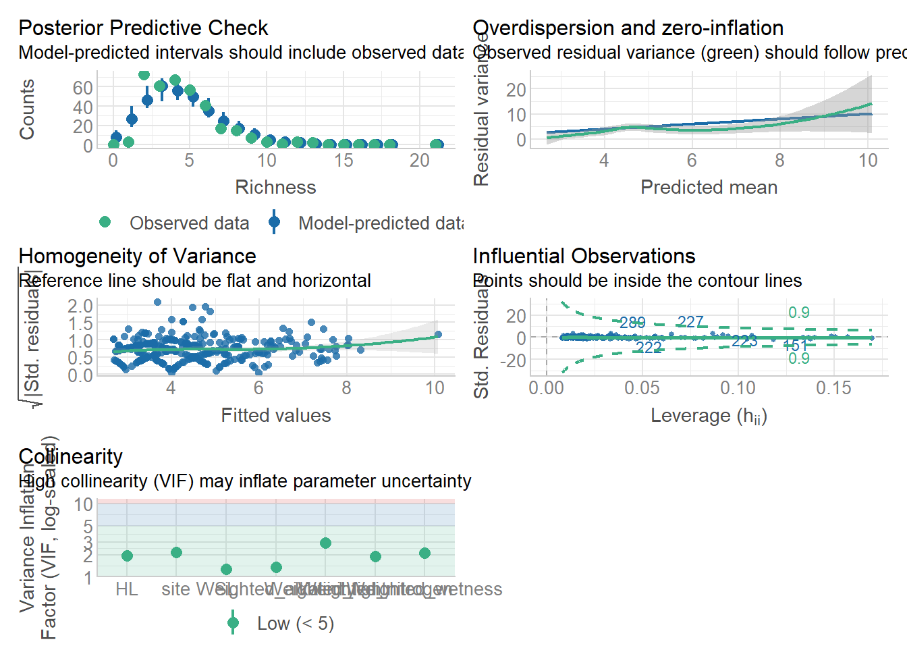
#modell sieht in orndung aus
summary(mod41)
Call:
glm(formula = Richness ~ Weighted_light + Weighted_wetness +
Weighted_nitrogen + Weighted_alkalinity + HL + SL + site,
family = poisson, data = merged_data)
Deviance Residuals:
Min 1Q Median 3Q Max
-1.8600 -0.5687 -0.1606 0.4038 3.4194
Coefficients:
Estimate Std. Error z value Pr(>|z|)
(Intercept) 2.295088 0.289439 7.929 2.20e-15 ***
Weighted_light -0.109172 0.048054 -2.272 0.02309 *
Weighted_wetness -0.047484 0.018839 -2.521 0.01172 *
Weighted_nitrogen 0.123680 0.049469 2.500 0.01241 *
Weighted_alkalinity 0.099015 0.032815 3.017 0.00255 **
HL -0.004593 0.001404 -3.271 0.00107 **
SL 0.004397 0.001682 2.614 0.00895 **
siteMeu_nass 0.150065 0.083257 1.802 0.07148 .
siteMeu_trock 0.271149 0.067402 4.023 5.75e-05 ***
---
Signif. codes: 0 '***' 0.001 '**' 0.01 '*' 0.05 '.' 0.1 ' ' 1
(Dispersion parameter for poisson family taken to be 1)
Null deviance: 345.21 on 349 degrees of freedom
Residual deviance: 208.43 on 341 degrees of freedom
AIC: 1363.6
Number of Fisher Scoring iterations: 4#Layer: Richness steigt bei mehr shrubs und weniger herbs
#Zeigerwerte: Richness steigt je dunkler, trockener, nährstoffreicher und alkalischer der Standort ist
#Nitrogen hat stärksten estimta =0.123680 , gefolgt von licht estimate = -0.168134
site_emm <- emmeans(mod41, ~ site, type = "response")
site_emm site rate SE df asymp.LCL asymp.UCL
Lic 3.68 0.184 Inf 3.33 4.06
Meu_nass 4.27 0.248 Inf 3.81 4.79
Meu_trock 4.82 0.231 Inf 4.39 5.30
Confidence level used: 0.95
Intervals are back-transformed from the log scale pairs(site_emm, adjust = "tukey") contrast ratio SE df null z.ratio p.value
Lic / Meu_nass 0.861 0.0717 Inf 1 -1.802 0.1687
Lic / Meu_trock 0.763 0.0514 Inf 1 -4.023 0.0002
Meu_nass / Meu_trock 0.886 0.0726 Inf 1 -1.477 0.3018
P value adjustment: tukey method for comparing a family of 3 estimates
Tests are performed on the log scale #signif untersch. zw erwartetr richness in lic&trock, erwartetet artzahl am höchsten in meu_trock mit 4.82 (Arten pro relevee), meu nass 4,27, lic 3,6810.2 Shannon-Index
mod5<-lm(Shannon ~ Weighted_light + Weighted_temperature + Weighted_wetness + Weighted_nitrogen + Weighted_alkalinity+Hoehe_rel+ HL + ML + SL + TL +site, data = merged_data)
summary(mod5)
mod6<-update(mod5,~.-TL)
anova(mod5,mod6)
#p=0.53
summary(mod6)
mod7<- update(mod6, ~.-Hoehe_rel)
anova(mod7,mod6)
#p=0.49
summary(mod7)
mod8<-update(mod7,~.-Weighted_temperature)
anova(mod7, mod8)
#p=0.47
summary(mod8)
mod9<- update(mod8,~.-ML)
anova(mod8,mod9)
#p= 0.26
summary(mod9)
mod10<-update(mod9,~.-Weighted_light)
anova(mod9,mod10)
#p=0.28
summary(mod10)
mod11<-update(mod10,~.- HL)
anova(mod10, mod11)
#p=0.09
summary(mod11)
mod111<-update(mod11,~.-SL)
anova(mod11, mod111)
#p=0,06
summary(mod111)check_model(mod111)plot(mod111)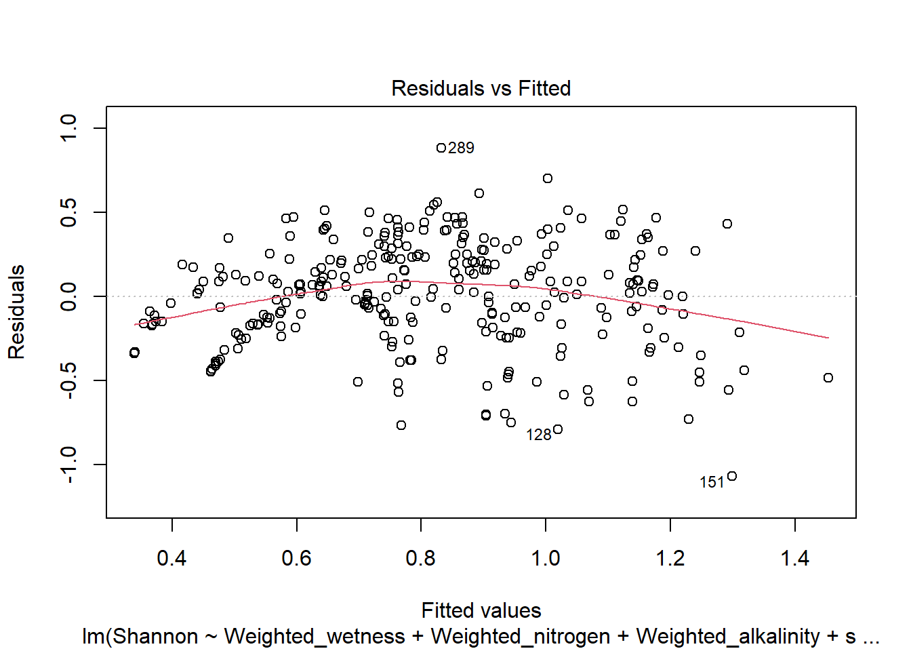

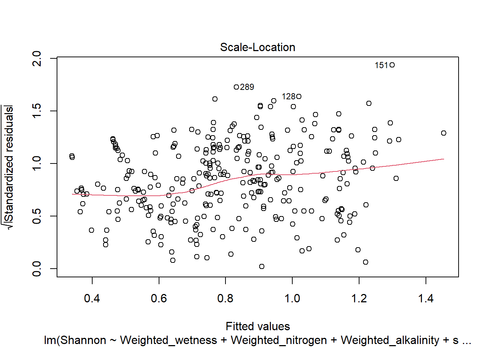
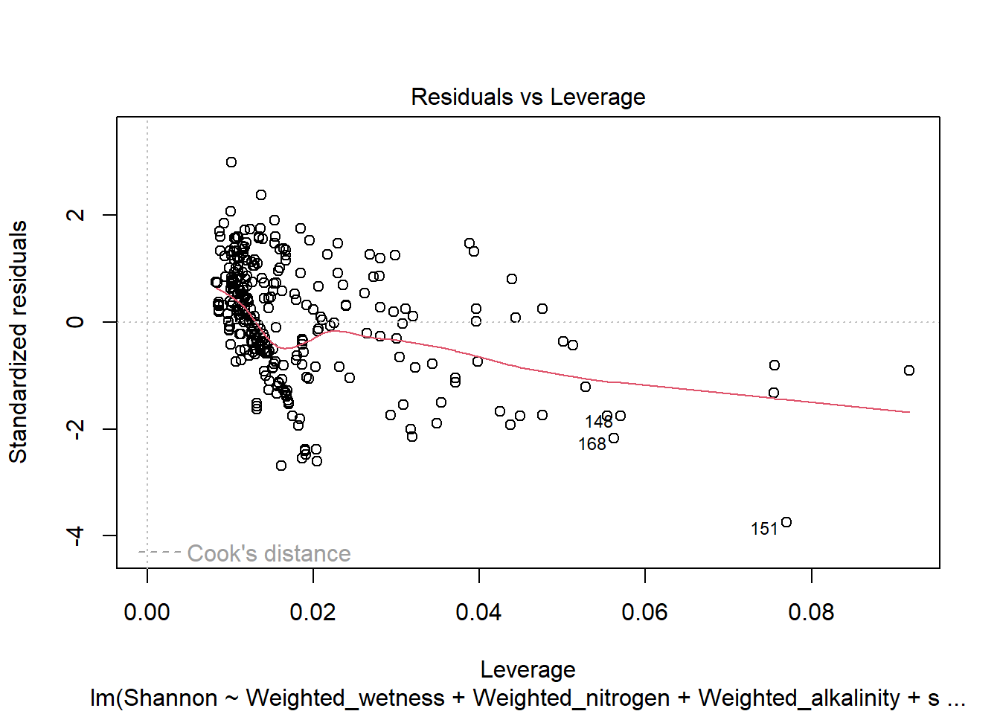
#plots sehen okay aus
summary(mod111)
Call:
lm(formula = Shannon ~ Weighted_wetness + Weighted_nitrogen +
Weighted_alkalinity + site, data = merged_data)
Residuals:
Min 1Q Median 3Q Max
-1.0719 -0.1734 0.0154 0.1984 0.8833
Coefficients:
Estimate Std. Error t value Pr(>|t|)
(Intercept) 1.104097 0.075427 14.638 < 2e-16 ***
Weighted_wetness -0.079420 0.009357 -8.488 6.38e-16 ***
Weighted_nitrogen -0.104379 0.024096 -4.332 1.94e-05 ***
Weighted_alkalinity 0.192371 0.018564 10.362 < 2e-16 ***
siteMeu_nass 0.107027 0.039539 2.707 0.00713 **
siteMeu_trock 0.121101 0.040283 3.006 0.00284 **
---
Signif. codes: 0 '***' 0.001 '**' 0.01 '*' 0.05 '.' 0.1 ' ' 1
Residual standard error: 0.2974 on 344 degrees of freedom
Multiple R-squared: 0.4014, Adjusted R-squared: 0.3927
F-statistic: 46.13 on 5 and 344 DF, p-value: < 2.2e-16#Shannon wird größer bei Trockenheit, Nährstoffarmut, höherer pH
#stärkster Faktor ph Estinate=0.19
#R2=0,4
site_emm <- emmeans(mod111, ~ site, type = "response")
site_emm site emmean SE df lower.CL upper.CL
Lic 0.706 0.0264 344 0.654 0.758
Meu_nass 0.813 0.0297 344 0.755 0.871
Meu_trock 0.827 0.0298 344 0.769 0.886
Confidence level used: 0.95 pairs(site_emm, adjust = "tukey") contrast estimate SE df t.ratio p.value
Lic - Meu_nass -0.1070 0.0395 344 -2.707 0.0195
Lic - Meu_trock -0.1211 0.0403 344 -3.006 0.0080
Meu_nass - Meu_trock -0.0141 0.0438 344 -0.321 0.9447
P value adjustment: tukey method for comparing a family of 3 estimates #höchste erwartetet shannon mt 0,83, mn 0,81, niedirgster lic 0,7
#signif L-MT, L-MN10.3 Evenness
mod12<-lm(Evenness ~ Weighted_light + Weighted_temperature + Weighted_wetness + Weighted_nitrogen + Weighted_alkalinity+ HL + ML + SL + TL + Hoehe_rel+site, data = merged_data)
summary(mod12)
mod13<-update(mod12,~.-ML)
anova(mod12,mod13)
#p=0.93
summary(mod13)
mod14<- update(mod13,~.-Hoehe_rel)
anova(mod13, mod14)
#p=0.73
summary(mod14)
mod15<-update(mod14,~.-TL)
anova(mod14, mod15)
#p=0.54
summary(mod15)
mod16<-update(mod15,~.-SL)
anova(mod15, mod16)
#p=0.21
summary(mod16)
mod17<-update(mod16,~.-HL)
anova(mod16, mod17)
#p=0.14
summary(mod17)
mod171<-update(mod17,~.-Weighted_temperature)
anova(mod17, mod171)
#p=0,07
summary(mod171)check_model(mod171)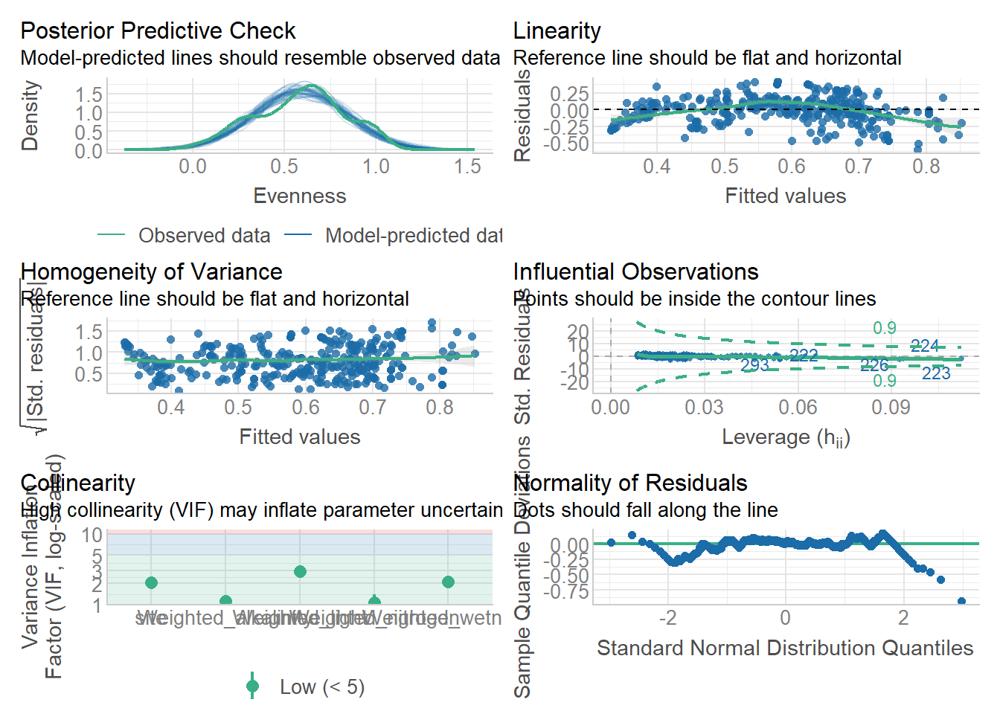
#sieht in ordnung aus
summary(mod171)
Call:
lm(formula = Evenness ~ Weighted_light + Weighted_wetness + Weighted_nitrogen +
Weighted_alkalinity + site, data = merged_data)
Residuals:
Min 1Q Median 3Q Max
-0.60289 -0.12701 0.00653 0.14123 0.42163
Coefficients:
Estimate Std. Error t value Pr(>|t|)
(Intercept) 0.242488 0.123812 1.959 0.050986 .
Weighted_light 0.088596 0.021543 4.113 4.91e-05 ***
Weighted_wetness -0.035811 0.008943 -4.004 7.65e-05 ***
Weighted_nitrogen -0.086029 0.017012 -5.057 6.98e-07 ***
Weighted_alkalinity 0.096715 0.013463 7.184 4.31e-12 ***
siteMeu_nass -0.099839 0.034904 -2.860 0.004493 **
siteMeu_trock -0.109458 0.028340 -3.862 0.000134 ***
---
Signif. codes: 0 '***' 0.001 '**' 0.01 '*' 0.05 '.' 0.1 ' ' 1
Residual standard error: 0.2083 on 340 degrees of freedom
(3 Beobachtungen als fehlend gelöscht)
Multiple R-squared: 0.2684, Adjusted R-squared: 0.2555
F-statistic: 20.79 on 6 and 340 DF, p-value: < 2.2e-16#Evenness steigt bei mehr Licht, Trockenheit, Nährstoffarmut, höherer pH
#pH stärkster Faktor Estimate =0.096715
#R2=0,27
site_emm <- emmeans(mod171, ~ site, type = "response")
site_emm site emmean SE df lower.CL upper.CL
Lic 0.651 0.0198 340 0.612 0.690
Meu_nass 0.551 0.0253 340 0.501 0.601
Meu_trock 0.542 0.0218 340 0.499 0.584
Confidence level used: 0.95 pairs(site_emm, adjust = "tukey") contrast estimate SE df t.ratio p.value
Lic - Meu_nass 0.09984 0.0349 340 2.860 0.0125
Lic - Meu_trock 0.10946 0.0283 340 3.862 0.0004
Meu_nass - Meu_trock 0.00962 0.0370 340 0.260 0.9635
P value adjustment: tukey method for comparing a family of 3 estimates #erwartete evenness in Lic 0,65, MN 0,55, MT 0,54
#singif Lic zu beiden Meusebach-flächen10.4 Sukzessionszeiger
mod18<-lm(Sukzessionszeiger ~ Weighted_light + Weighted_temperature + Weighted_wetness + Weighted_nitrogen + Weighted_alkalinity+ HL + ML + SL + TL + Hoehe_rel+site, data = merged_data)
summary(mod18)
mod19<-update(mod18,~.-Weighted_nitrogen)
anova(mod18, mod19)
#p=0.92
summary(mod19)
mod20<-update(mod19,~.-ML)
anova(mod19, mod20)
#p=0.74
summary(mod20)
mod201<-update(mod20,~.-Weighted_wetness)
anova(mod20, mod201)
#p=0,16
summary(mod201)
mod202<-update(mod201,~.-Hoehe_rel)
anova(mod201,mod202)
#p=0,12
summary(mod202)
mod203<-update(mod202,~.-Weighted_alkalinity)
anova(mod202,mod203)
#p=0,11
summary(mod203)check_model(mod203)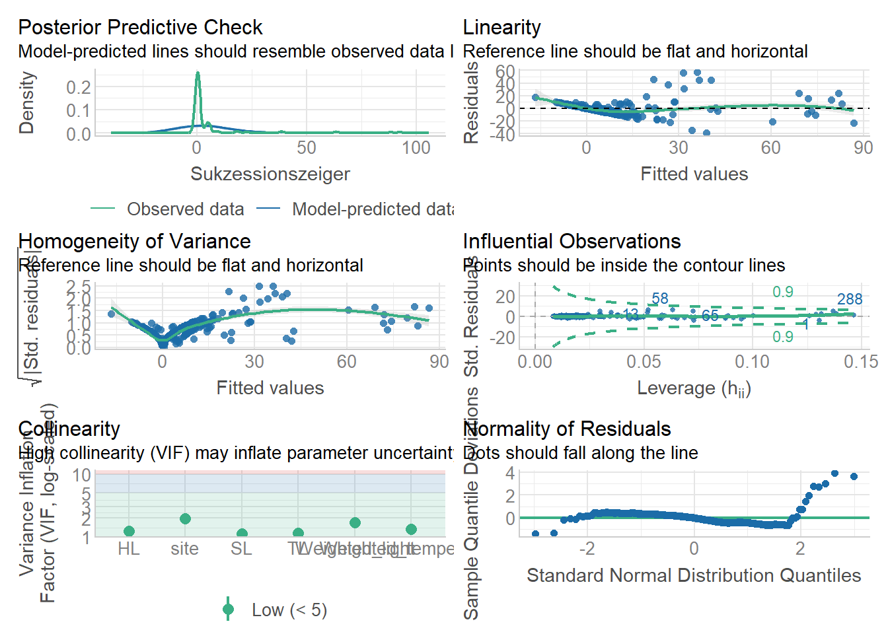
#sieht nicht so gut aus, ich teste mal log-transformation (log1p macht immer +1 um 0 zu vermeiden)mod21<-lm(log1p(Sukzessionszeiger) ~ Weighted_light + Weighted_temperature + HL + SL + TL + site,data = merged_data)
summary(mod21)
#mod22<-update(mod21,~.-Weighted_alkalinity)
#anova(mod21, mod22)
#p=0.2134
#summary(mod22)check_model(mod21)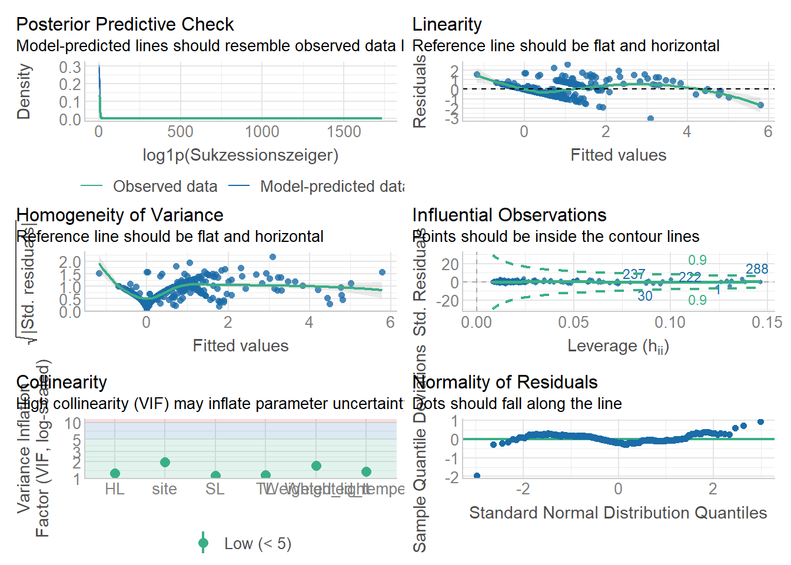
plot(mod21)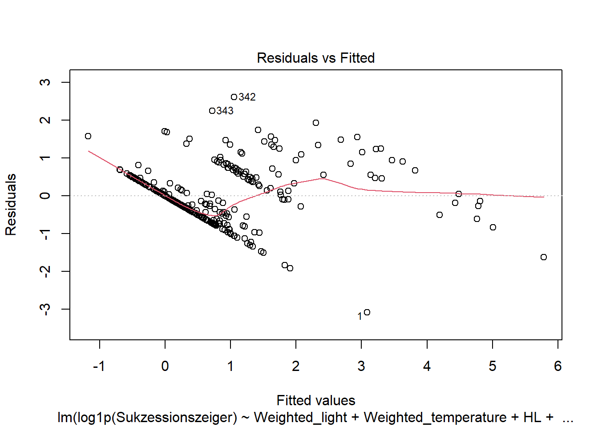
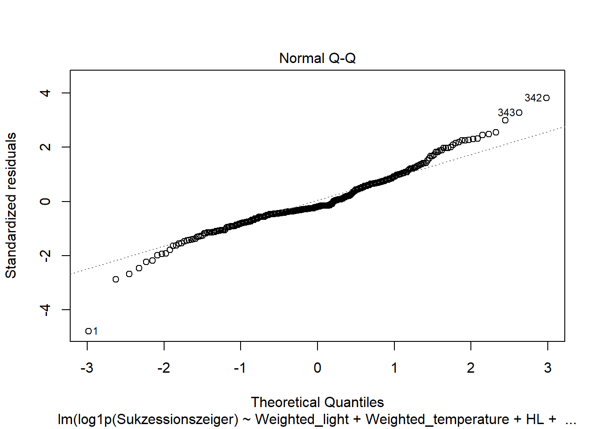
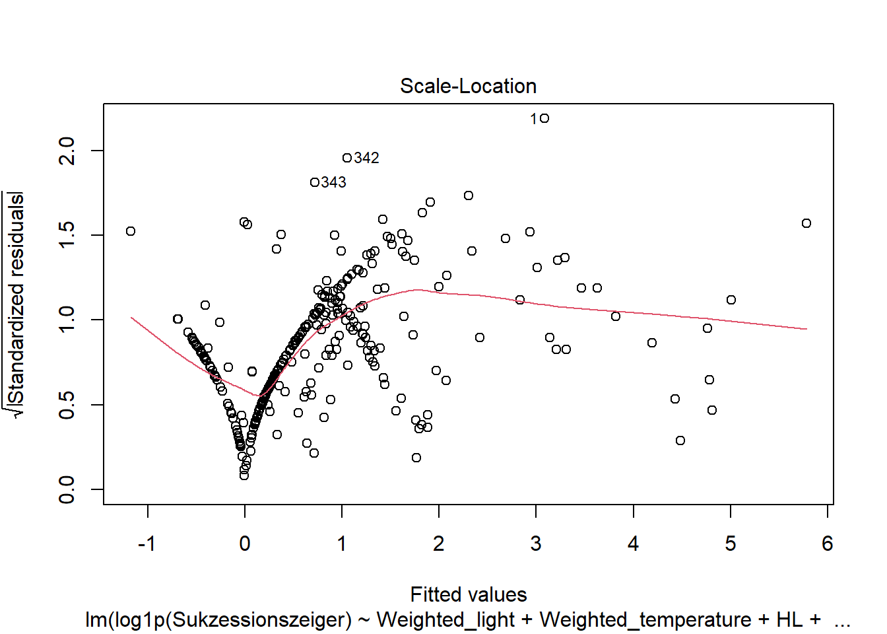

# das hat auch nix verbessert, ich lasse das modell nochmal von vorne laufen als gam mit family=tweedie, da abhängige Variable stark rechtsschief
mod23<-gam(Sukzessionszeiger ~ Weighted_light + Weighted_temperature + Weighted_wetness + Weighted_nitrogen + Weighted_alkalinity+ HL + ML + SL + TL + Hoehe_rel+site,family=tw, data = merged_data)
summary(mod23)
mod24<-update(mod23,~.-Hoehe_rel)
summary(mod24)
mod25<-update(mod24,~.-HL)
summary(mod25)
mod26<-update(mod25,~.-Weighted_nitrogen)
summary(mod26)
mod27<-update(mod26,~.-TL)
summary(mod27)
mod271<-update(mod27,~.-Weighted_alkalinity)
summary(mod271)gam.check(mod271)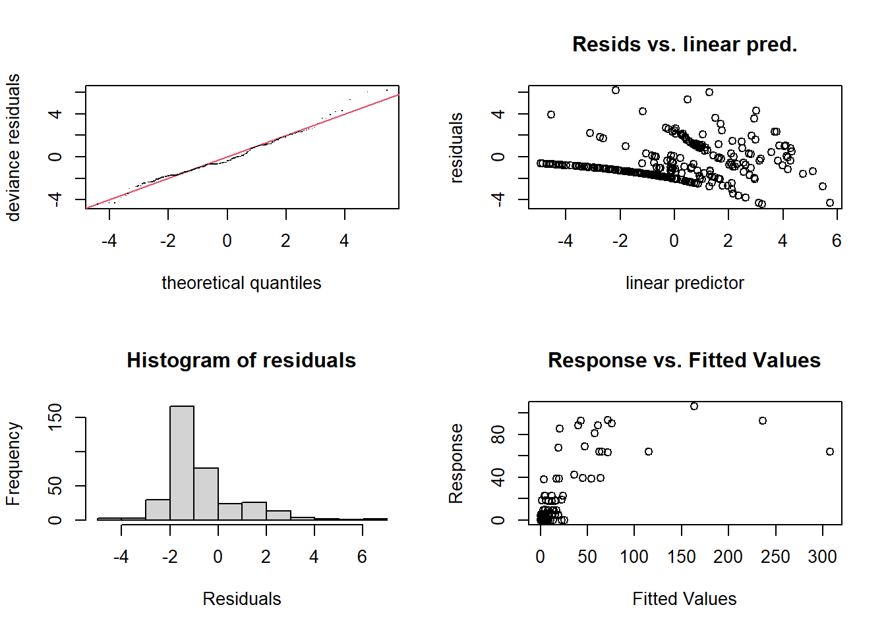
Method: REML Optimizer: outer newton
full convergence after 5 iterations.
Gradient range [-1.177094e-08,-6.515052e-09]
(score 564.8073 & scale 3.854276).
Hessian positive definite, eigenvalue range [85.86417,220.7818].
Model rank = 8 / 8 #bis auf response vs fitted sieht alles in ordnung aus, modell wird erstmal angenommen
summary(mod271)
Family: Tweedie(p=1.523)
Link function: log
Formula:
Sukzessionszeiger ~ Weighted_light + Weighted_temperature + Weighted_wetness +
ML + SL + site
Parametric coefficients:
Estimate Std. Error t value Pr(>|t|)
(Intercept) 6.095243 0.985085 6.188 1.75e-09 ***
Weighted_light -0.535612 0.161312 -3.320 0.000996 ***
Weighted_temperature 0.643054 0.069388 9.268 < 2e-16 ***
Weighted_wetness -0.417498 0.057302 -7.286 2.22e-12 ***
ML -0.022990 0.005142 -4.471 1.06e-05 ***
SL 0.032047 0.003199 10.017 < 2e-16 ***
siteMeu_nass -1.929870 0.383322 -5.035 7.76e-07 ***
siteMeu_trock 0.460824 0.225353 2.045 0.041630 *
---
Signif. codes: 0 '***' 0.001 '**' 0.01 '*' 0.05 '.' 0.1 ' ' 1
R-sq.(adj) = -0.0103 Deviance explained = 71.9%
-REML = 564.81 Scale est. = 3.8543 n = 350#Sukzessionszeiger treten vermehrt auf bei Schatten, höheren Temperaturen, Trockenheit, wenig Moose, viel Shrubs
#moose und shrubs logisch, da meiste sukzessionszeiger shrubs sind...
#stärkster einfluss licht Estimate = -1.094643
#schatten könnte zirkelschluss sein, da sukzessionszeiger meist shrubs, die beschatten umgebung -> kommen da vor, wo arten in ihrem schatten vorkommen
#zweitsträrkster einfluss temperatur estimate = 0.643054 Je wärmer desto mehr Sukzesinszeiger
#R2=0,719
site_emm <- emmeans(mod271, ~ site, type = "response")
site_emm site response SE df lower.CL upper.CL
Lic 0.997 0.1770 342 0.702 1.414
Meu_nass 0.145 0.0483 342 0.075 0.279
Meu_trock 1.580 0.3010 342 1.086 2.299
Confidence level used: 0.95
Intervals are back-transformed from the log scale pairs(site_emm, adjust = "tukey") contrast ratio SE df null t.ratio p.value
Lic / Meu_nass 6.8886 2.6400 342 1 5.035 <0.0001
Lic / Meu_trock 0.6308 0.1420 342 1 -2.045 0.1032
Meu_nass / Meu_trock 0.0916 0.0362 342 1 -6.053 <0.0001
P value adjustment: tukey method for comparing a family of 3 estimates
Tests are performed on the log scale #meiste sukzessionszeiger in MT 1,6; Lic 1; MN 0,15
#MN singif zu lic und MT10.5 Moorart
mod28<- lm(Moorart ~Weighted_light + Weighted_temperature + Weighted_wetness + Weighted_nitrogen + Weighted_alkalinity+ HL + ML + SL + TL + Hoehe_rel+site, data=merged_data)
summary(mod28)
mod29<-update(mod28,~.-Weighted_light)
anova(mod28, mod29)
#p=0.97
summary(mod29)
mod30<-update(mod29,~.-Weighted_alkalinity)
anova(mod29, mod30)
#p=0.25
summary(mod30)
mod31<- update(mod30,~.-TL)
anova(mod30, mod31)
#p=0.07
summary(mod31)
mod32<- update(mod31,~.-Hoehe_rel)
anova(mod31, mod32)
#p=0.06
summary(mod32)summary(mod32)
Call:
lm(formula = Moorart ~ Weighted_temperature + Weighted_wetness +
Weighted_nitrogen + HL + ML + SL + site, data = merged_data)
Residuals:
Min 1Q Median 3Q Max
-58.676 -9.967 0.245 10.362 83.191
Coefficients:
Estimate Std. Error t value Pr(>|t|)
(Intercept) -2.41628 5.50773 -0.439 0.66115
Weighted_temperature -10.33272 0.95287 -10.844 < 2e-16 ***
Weighted_wetness 4.75881 0.61162 7.781 8.68e-14 ***
Weighted_nitrogen -6.19315 2.13909 -2.895 0.00403 **
HL 0.78370 0.05320 14.732 < 2e-16 ***
ML 0.84483 0.06402 13.197 < 2e-16 ***
SL 0.17122 0.07446 2.299 0.02208 *
siteMeu_nass 4.16647 2.53318 1.645 0.10094
siteMeu_trock -11.34015 2.79845 -4.052 6.29e-05 ***
---
Signif. codes: 0 '***' 0.001 '**' 0.01 '*' 0.05 '.' 0.1 ' ' 1
Residual standard error: 17.26 on 341 degrees of freedom
Multiple R-squared: 0.7544, Adjusted R-squared: 0.7487
F-statistic: 131 on 8 and 341 DF, p-value: < 2.2e-16check_model(mod32)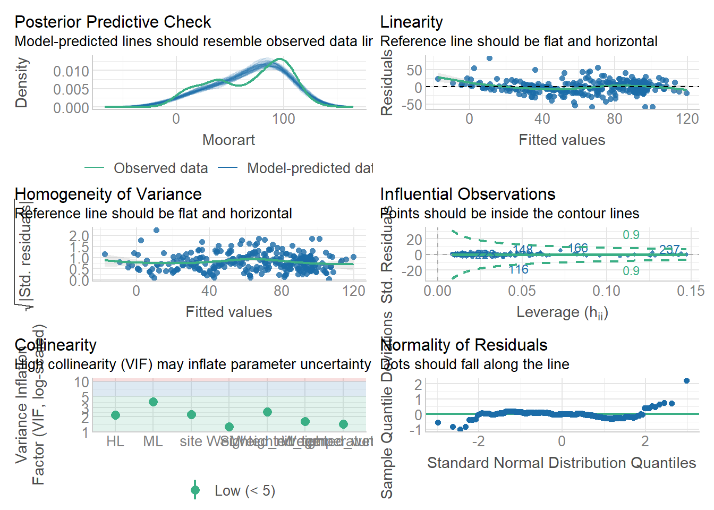
#Moorarten treten vermehrt auf bei Kälte, Feuchte, Nährstoffarmut, mehr Moose, etwas mehr herbs und shrubs
#makes sense :)
#R2=0,75
site_emm <- emmeans(mod32, ~ site, type = "response")
site_emm site emmean SE df lower.CL upper.CL
Lic 70.9 1.66 341 67.6 74.2
Meu_nass 75.1 1.90 341 71.3 78.8
Meu_trock 59.5 2.01 341 55.6 63.5
Confidence level used: 0.95 pairs(site_emm, adjust = "tukey") contrast estimate SE df t.ratio p.value
Lic - Meu_nass -4.17 2.53 341 -1.645 0.2284
Lic - Meu_trock 11.34 2.80 341 4.052 0.0002
Meu_nass - Meu_trock 15.51 3.05 341 5.086 <0.0001
P value adjustment: tukey method for comparing a family of 3 estimates #meiste moorarten in MN 75,1; Lic 70.9; MT 59,5
# Lic und mn kein signif unterschied10.6 Gehölze
hist(merged_data$woody)
#ich sollte wieder ein gam mit family=tweedie nutzenmod33<-gam(woody ~Weighted_light + Weighted_temperature + Weighted_wetness + Weighted_nitrogen + Weighted_alkalinity+ HL + ML + SL + TL + Hoehe_rel+site,family=tw, data=merged_data)
summary(mod33)
mod34<-update(mod33,~.-Weighted_temperature)
summary(mod34)
mod35<-update(mod34,~.-Weighted_nitrogen)
summary(mod35)
mod36<-update(mod35,~.-HL)
summary(mod36)
mod37<-update(mod36,~.-Hoehe_rel)
summary(mod37)gam.check(mod37)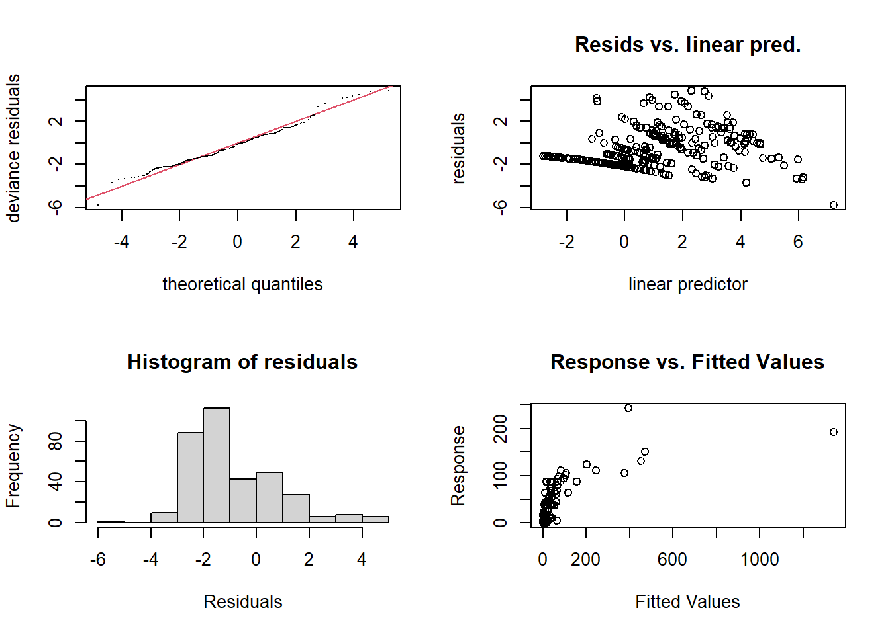
Method: REML Optimizer: outer newton
full convergence after 4 iterations.
Gradient range [-0.0004166096,-0.0002934247]
(score 804.0584 & scale 3.601538).
Hessian positive definite, eigenvalue range [118.7767,232.8429].
Model rank = 9 / 9 #response vs fitted sieht wieder komisch aus, der rest passt ganz gu
summary(mod37)
Family: Tweedie(p=1.58)
Link function: log
Formula:
woody ~ Weighted_light + Weighted_wetness + Weighted_alkalinity +
ML + SL + TL + site
Parametric coefficients:
Estimate Std. Error t value Pr(>|t|)
(Intercept) 9.134908 0.862018 10.597 < 2e-16 ***
Weighted_light -0.980402 0.151407 -6.475 3.30e-10 ***
Weighted_wetness -0.298934 0.056057 -5.333 1.77e-07 ***
Weighted_alkalinity 0.277067 0.097888 2.830 0.004924 **
ML -0.013945 0.004170 -3.344 0.000917 ***
SL 0.030692 0.003131 9.801 < 2e-16 ***
TL 0.028019 0.003616 7.749 1.08e-13 ***
siteMeu_nass 0.382209 0.232138 1.646 0.100588
siteMeu_trock 0.487142 0.193643 2.516 0.012340 *
---
Signif. codes: 0 '***' 0.001 '**' 0.01 '*' 0.05 '.' 0.1 ' ' 1
R-sq.(adj) = -4.38 Deviance explained = 70.2%
-REML = 804.06 Scale est. = 3.6015 n = 350#Gehölze treten vermehrt auf bei Schatten, Trockenheit, höherem pH, weniger Moos, mehr shrubs und trees
# Schichten skönnten wieder zirkelschluss sein -> gehölze kommen in allen schichten außer moos vor
#R2=0,702
site_emm <- emmeans(mod37, ~ site, type = "response")
site_emm site response SE df lower.CL upper.CL
Lic 1.55 0.238 341 1.15 2.10
Meu_nass 2.27 0.401 341 1.61 3.22
Meu_trock 2.53 0.375 341 1.89 3.38
Confidence level used: 0.95
Intervals are back-transformed from the log scale pairs(site_emm, adjust = "tukey") contrast ratio SE df null t.ratio p.value
Lic / Meu_nass 0.682 0.158 341 1 -1.646 0.2277
Lic / Meu_trock 0.614 0.119 341 1 -2.516 0.0330
Meu_nass / Meu_trock 0.900 0.210 341 1 -0.450 0.8942
P value adjustment: tukey method for comparing a family of 3 estimates
Tests are performed on the log scale #lic-MT signif
#meiste gehölze MT 2,5; MN 2,3; Lic 1,6